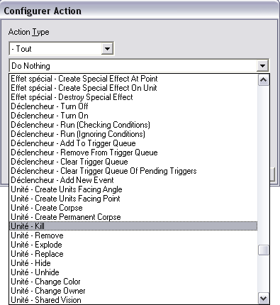
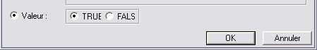
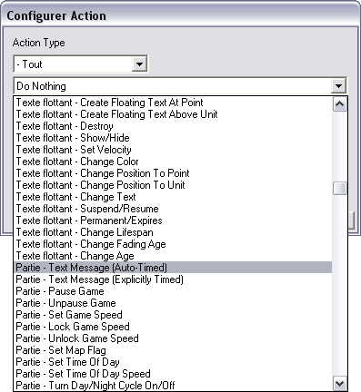
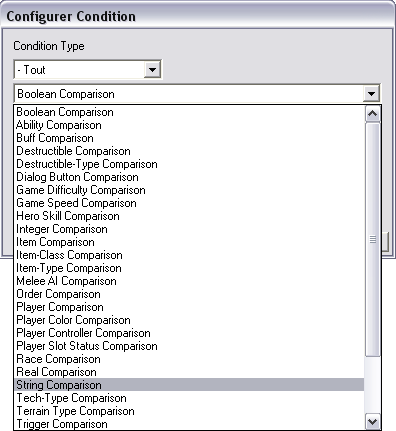
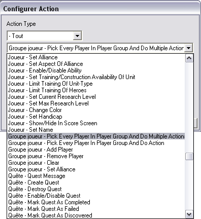
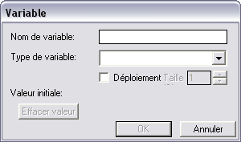
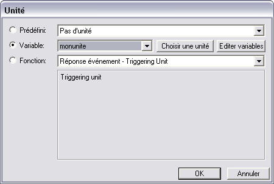
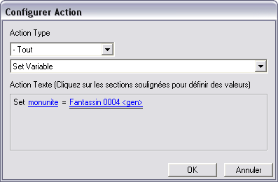
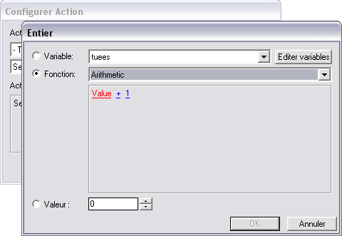

Ce gros tuto vous permettra, à la fin, de créer des maps warcraft III tout à fait potables, mais il faudra vous accrocher :) .
Je tiens aussi à préciser (très important) : l'extension "The Frozen Throne" est O-B-L-I-G-A-T-O-I-R-E ! En effet, nous verrons énormément de choses nécessitant l'extension.
Aussi, bien que nous verrons quelques bases, je vous les montrerai de façon assez brève. C'est pourquoi je vous conseille de lire le très bon tuto intitulé Les bases du mapping avec war3editor, par Keeper, pour bien commencer :) .
Sinon, nous allons voir principalement les déclencheurs, les interactions avec les régions, etc., etc. En commençant par le plus simple, et en terminant par du plus complexe (logique ^^ ).
Bon, sans être un pro en anglais, war3editor est le nom de l'éditeur officiel de Warcraft III. Pas la peine d'aller le télécharger je ne sais pas où, c'est bien simple : il est inclus avec votre jeu.
Alors, déjà pour commencer, on va le lancer (c'est mieux, quand même). Pour ça, pas la peine d'aller chercher bien loin, allez dans votre menu 'Démarrer', 'Programmes', Warcraft III, et hop là, le petit raccourci "Éditeur de Warcraft III".
Et là, magie (sauf si vous avez pas inséré votre CD de Warcraft III), le logiciel se lance, avec une allure similaire à celle-ci :
Bon : je vous rassure, ça ne va pas rester comme ça ^^ . Vous tombez ensuite sur un écran de terre, avec une barre d'outils en haut, une fenêtre à droite, intitulée "Palette d'outils" (ne vous inquiétez pas si vous ne l'avez pas), et à gauche un cadre avec une vue de la minimap et d'autres encadrés.
Pas de panique ! Nous aurons le temps de voir tous ces éléments en détail dans la suite du tuto.
Nous allons voir ici, globalement, la palette d'outils, et ce qu'elle nous réserve à l'intérieur :) .
La palette d'outils est une fenêtre amovible située à droite par défaut. Si vous ne l'avez pas, cliquez, en haut, sur l'onglet "Fenêtres" -> "Nouvelle Palette" -> "Terrain" (ou ce que vous voulez...).
Bien, maintenant que vous le monde a sa palette, on va pouvoir peindre regarder un peu ce qu'elle contient. Nous allons commencer par le premier menu déroulant, dans lequel nous avons 5 parties :
- Palette du Terrain :
Dans cette partie, vous pouvez remodeler le terrain à votre guise.
Premier encadré : les textures. En fait, cela permet d'appliquer de la texture à votre map : par exemple, prenez l'herbe ; vous pouvez ensuite mettre de l'herbe un peu partout sur votre map (woaa, trop bien :p ).
Deuxième encadré : les falaises. Dans cet encadré, vous avez accès à tout ce qui concerne le paramétrage de l'altitude de votre map. Tenez, cliquez sur "Augmenter de Un", puis sur votre map, vous pourrez alors créer des falaises de niveau d'altitude 1.
Je pense que vous comprendrez ensuite l'utilité de "Baisser de Un", etc... "Haut-fond" sert à faire des points d'eaux où des unités peuvent marcher, tandis qu'elles ne le pourront pas sur des "eaux profondes".
Ensuite, des modificateurs d'altitudes, pas la peine de vous expliquer à quoi ils servent, je pense ^^ .
Et pour finir, la taille et la forme du pinceau.
Palette des Doodads :
Un doodad est ce que l'on pourrait appeler plus fréquemment un "élément de décors". Arbres, caisses, portes, et tout plein de décors sympathiques vous attendent ;) .
C'est principalement grâce à eux qu'une map est agréable à jouer. Il ne faut pas en mettre trop, mais suffisamment quand même.
Après, je vous laisse vous amuser entre les différentes catégories dans les menus déroulants ^^ .
Palette d'Unités :
Aaaahh.... La fameuse palette d'unité :p . Très souvent, la première à laquelle on touche vraiment. Ma toute première map, comme beaucoup d'autres joueurs, fut la création d'une bataille gigantesque, avec 100 unités contre 100 autres, et BASTON ! Allez, ne me dites pas que vous ne l'avez jamais fait ^^ .
Bon : je ne m'attarde pas trop dessus, je ne pense pas que cette palette soit réellement compliquée.
Palette de régions :
Bon, là, je ne vais pas avoir grand-chose à dire, à part : on verra plus tard ^^ . Vous pouvez vous amuser à ajouter des régions sur la map, mais on ne verra leur utilité que plus tard dans les chapitres suivants.
Palette de caméras :
Grâce à cette palette, on peut créer des caméras qui serviront plus tard à faire des cinématiques, mais ça, pareil, je ne vous l'expliquerai que plus tard...
Barre d'icône et d'outils, et les raccourcis correspondants.
Maintenant, on va voir encore deux autres barres d'outils. Commençons par la toute première, en haut :
Cette barre est la plus classique. Il y a à peu près tout dedans, mais après, faut chercher aussi ^^ . Je ne vois pas trop l'utilité de vous expliquer l'utilité de chaque sous-menu, donc je ne m'attarde pas trop :
Un peu en dessous, une barre d'icônes. Dans cette barre d'icônes, vous avez accès aux choses les plus importantes, c'est-à-dire tous les éditeurs (éditeur d'objets, éditeur de déclencheurs, etc...). Pareil, tout est déjà marqué si on laisse le curseur sur une icône, je vous laisse donc découvrir ça de vous-mêmes :) :
Pour finir avec les raccourcis :
F4 : Éditeur de Déclencheur F5 : Éditeur de Son F6 : Éditeur d'objets (attention : objets comprend les unités, les sorts, les doodads, les objets à proprement parler ^^ , etc...) F7 : Éditeur de campagne (pour faire plusieurs maps solo qui s'enchaînent) F8 : Éditeur IA : pour faire votre propre intelligence artificielle. Enfin, c'est assez limité. F11 : Gestionnaire d'objets (pareil, objets désigne ici beaucoup de choses. C'est en fait un récapitulatif de ce que vous utilisez actuellement dans votre map, et la possibilité de les modifier) F12 : Gestionnaire d'importation (pour importer des fichiers, que ce soit de nouveaux modèles ou de nouveaux sons, tout est permis) Ctrl + F9 : Lance la map pour la tester.
Nous allons maintenant entrer dans le monde des déclencheurs, et des régions. Nous y verrons donc les fonctions basiques des déclencheurs, ainsi que l'utilité des mystérieuses régions.
Aller zou, c'est parti, on commence les choses sérieuses... :).
Bon, d'abord, je vais vous expliquer de quoi on va se servir.
Les Régions :
Une région est en fait un endroit de la map, de forme rectangulaire. Allez dans votre palette d'outils, sélectionner 'Palette de Régions' dans le menu déroulant, et ajoutez-en sur la map. Ces régions sont invisibles lorsque l'on joue. Elles sont juste là pour donner des repères à la map, et surtout pour indiquer quelque chose aux déclencheurs :).
En fait, grâce à elles, on peut faire tout plein de choses, comme :
"Lorsque cet Archimage entre dans cette région, alors on le tue", ou bien "Lorsque cet Archimage entre dans cette région, alors on lui donne un niveau".
Bref, les régions donnent des points de repères, exploitables ensuite par les déclencheurs.
Les Déclencheurs
C'est grâce à eux que l'on pourra faire, comme dans l'exemple ci-dessus, les actions comme "Donner un niveau", ou bien "Tuer telle unité". C'est donc grâce à eux que l'on fait vivre une map. Une map sans déclencheurs n'est pas grand-chose.
Bah euh... Une map de mêlée, y a pas de déclencheurs pourtant !
Détrompez-vous ;) . L'IA des ordinateurs, les monstres qui lâchent des objets, etc. Tout ça est fait par DECLENCHEUR ! C'est juste que ces déclencheurs "spéciaux", on ne peut pas les voir. Mais bref, c'est grâce à eux qu'une map est cool à jouer :) .
C'est pourquoi il vous faudra absolument maîtriser les déclencheurs pour faire des maps à peu près potables :) .
Allez, nous allons maintenant exploiter quelques exemples simples de déclencheurs. Mais avant tout, une présentation brève des déclencheurs s'impose :) .
Ouvrez votre éditeur de déclencheur (F4). On tombe sur ça :
Vous remarquerez qu'il y a déjà un déclencheur créé, appelé Initialisation Mêlée.
Ce déclencheur est en fait associé par défaut à toute nouvelle map créée. Il a pour but d'initialiser les paramètres de mêlée (juste les initialiser, ce n'est pas lui qui gère toute l'IA et tout le patatras ^^ ).
Vu qu'on en n'a vraiment pas besoin, sauf si vous comptez faire une map mêlée (mais moi je vais vous enseigner à faire des scénarios donc bon...) --> Suppr :D
Maintenant, on va créer un nouveau déclencheur (histoire de...). Faites Ctrl + T, et renommez votre déclencheur en ce que vous voulez (les caractères spéciaux, accents compris, ne sont pas autorisés). J'ai décidé d'appeler le mien NouveauDeclencheur :
Bon maintenant, intéressons-nous à la partie de droite :
Évènements
Conditions
Actions
Je vais alors vous expliquer en quoi consistent ces trois phases :
Les événements représentent tout ce qui va déclencher le déclencheur. On pourra inclure, dans ces événements : "si l'archimage entre dans la région 001", et plein d'autres choses comme ça :) .
Les conditions, c'est ce qui doit être OK pour passer aux actions. On pourra inclure dedans : "Si l'unité qui entre est un héros", ou bien "Si l'unité qui entre possède l'objet Potion de Vie". Si l'une de ces conditions n'est pas respectée, le déclencheur s'arrêtera sans effectuer la suite des actions.
Les actions sont tout simplement ce qu'exécute le déclencheur. On y trouvera "Tuer telle unité", ou bien "Monter de niveau tel héros", etc. Seules les actions effectuent des actions visibles sur la map.
Voilà. Après la théorie, la pratique :) .
Nous allons maintenant voir comment ordonner aux déclencheurs que si telle unité entre dans telle région, on lui fait subir quelque chose.
Commençons déjà par créer une région dont nous allons nous servir, ainsi qu'un archimage :
Bien. Vous remarquerez, dans la palette de régions, que notre région s'est renommée Région 000. Pour une map comme celle-là pour laquelle nous n'en utiliserons qu'une, pas de problème ; mais le jour où votre map aura 40 régions, et qu'elles s'appelleront toutes Région 000, Région 001, etc. vous vous en sortirez pas. Donc, autant prendre les bonnes habitudes dès maintenant, en la renommant d'un autre nom ^^. Pour cela, cliquez droit sur le nom de votre région dans la palette, et faites "Renommer région". J'ai décidé de renommer la mienne Region Archimage.
Vous remarquerez que, dans cette petite fenêtre, vous pouvez vous amuser à ajouter un effet météo, ou changer la couleur de la région (fort utile pour les maps ayant beaucoup de régions, c'est encore un moyen pour mieux s'y retrouver).
Bien... Maintenant, c'est l'heure de retourner aux déclencheurs :p . Nous avons donc notre déclencheur (que j'avais renommé NouveauDeclencheur"), vide. Dans ce déclencheur, nous allons vouloir faire subir une action à l'archimage lorsqu'il entrera dans la région. Commençons d'abord par l'événement. En français, cela nous donnerait : Si l'archimage entre dans la région "Région Archimage" .
Faites donc Ctrl + E (nouvel événement), et vous devriez voir apparaître cette fenêtre :
Dans ce menu déroulant, nous allons trouver tous les types d'événements possibles. Seul petit inconvénient dans les déclencheurs : c'est en anglais. Mais bon, en toute logique, on comprend que Map Initialization signifie Initialisation de la map.
Mais nous, ce qui nous intéresse, c'est l'événement : si une unité entre dans une région. On descend un peu et... tadaa :
On clique dessus, et on aboutit à ça :
On remarque ici le mot Region en rouge. Lorsqu'un mot est en rouge, cela signifie que c'est un paramètre à compléter. Ici, nous devons préciser dans quelle région l'événement s'activera. Cliquons dessus pour voir plus en détail :
Il y a donc trois possibilités ici :
Prédéfini, on ne va pas s'en servir, car à part "Pas de Région", y a rien dedans ^^
Variable : beaucoup plus intéressant, en effet, le nom de notre région y figure !
Fonction : nous verrons plus tard :) .
Ce qui nous reste, c'est donc dans la catégorie Variable, puisque de toute façon, impossible de se tromper, vu que notre région figure déjà dans la liste. On va donc cliquer sur le bouton radio (le petit bouton circulaire) en face du mot Variable. On clique sur Ok, Ok encore, et hop, on a notre événement créé :) . Maintenant, dès qu'une unité entrera dans la région Region Archimage, le déclencheur s'exécutera !
Hein ? Mais je croyais qu'on voulait qu'il s'exécute seulement si l'unité qui entrait était l'archimage !
Oui, oui ^^ . C'est pourquoi nous allons utiliser une condition, qui s'occupera de vérifier si l'unité qui entre est bel et bien l'archimage en question :) .
Faites donc Ctrl + D (nouvelle condition). Une fenêtre, très similaire à celle de l'ajout d'événement, s'ouvre. Dans le menu déroulant, on nous propose plein de types de conditions différentes (comparaisons entre des héros, des objets, etc...). Nous, ce que nous voulons, c'est comparer l'unité qui entre à l'archimage. De cette manière, si l'unité qui entre est l'archimage, le déclencheur se poursuivra normalement, tandis que si ce n'est pas l'archimage --> on stoppe tout. On cherche donc un tantinet, et hop :
On clique, pour aboutir à ceci :
Ici, nous allons devoir remplacer Triggering Unit (mis par défaut), et Value par notre archimage, et l'unité qui entre dans la région, pour les comparer.
Commençons par cliquer sur Triggering Unit. Nous allons ici préciser la première unité à comparer : l'archimage.
On retrouve un encadré quasi-identique à celui des régions. Sauf qu'à la deuxième ligne, celle des variables, on n'a rien o_O .
Pas de panique, que voit-on juste à côté ? "Choisir une Unité". Cliquons dessus. Nous nous retrouvons alors sur le terrain de la map. Comme l'a indiqué ce sur quoi nous venons de cliquer, Choisir une Unité, il va falloir la sélectionner dans l'éditeur. Cherchez votre archimage et cliquez dessus. La fenêtre des déclencheurs devrait réapparaître, et vous devriez vous trouver avec ça maintenant :
On clique sur OK. Voilà, la moitié est faite. Mais maintenant, il faut préciser la deuxième unité à comparer : l'unité qui entre.
Hé mais, comment on la trouve cette fameuse unité qui entre, sachant que ça peut être n'importe laquelle ??
Aaahh... Alors là, ouvrez grands vos yeux et ne perdez pas une miette de ce que je vais vous dire :) .
Cliquez maintenant sur Value. Nous allons devoir chercher ce qui pourrait correspondre à l'unité qui entre. Bien sûr, ce n'est pas dans Prédéfini, puisqu'il n'y a rien à part Pas d'unité. Ensuite, cela ne pourrait être une Variable, puisqu'une variable correspond à une unité précise, qui n'entrerait pas forcément dans la région. Nous n'allons pas comparer l'archimage à un gnoll qui se trouve à 500 mètres ^^ . La réponse est donc forcément dans... Les Fonctions ! Si on y regarde de plus près, il y a plein de Réponse événements - xxxxx unit.
Eh bien, et retenez bien, les réponses événements sont en fait des entités définies par les évènements eux-mêmes ! Par exemple, l'événement Unité - A unit enters region Region Archimage, va définir l'une de ces Réponses événements en tant que l'unité qui entre dans la région Region Archimage. Je sais que ça peut paraître un peu dur à comprendre au début, mais on s'y fera très vite. Mais maintenant, il faut se demander... Quel réponse-événement notre événement a-t-il défini en tant qu'unité qui entre ?
Eh bien il suffit d'être un tout petit peu doué en anglais pour le voir : Entering Unit. Hé oui, notre événement a défini Entering Unit en tant que l'unité qui entre. Donc, si l'on veut comparer notre archimage à l'unité qui entre, il faudra le comparer à... Entering Unit !
Imaginons que c'est l'archimage qui entre dans la région Region Archimage :
L'archimage entre dans la région Region Archimage | v Notre événement défini "Entering Unit" en tant qu'unité qui entre (donc l'archimage) | v La condition compare L'archimage avec Entering Unit. | v La condition est bonne, puisque l'archimage est égale à entering Unit, puisque c'est lui qui entre (vous me suivez toujours ? :p ). | v Exécution des actions
En gros, ça revient un peu à faire "Si Archimage = Archimage, alors on continue". Toutefois, imaginons qu'un Gnoll était rentré, cela aurait donné :
Un gnoll entre dans la région Region Archimage | v Notre événement défini "Entering Unit" en tant qu'unité qui entre (donc le gnoll) | v La condition compare L'archimage avec Entering Unit (donc avec le gnoll). | v La condition est fausse, puisque l'archimage n'est pas égale à entering Unit, puisque Entering Unit = un Gnoll | v Arrêt du déclencheur
On trouve donc rapidement dans la liste des Fonctions ce qui sera l'unité qui entre :
On sélectionne, OK, OK, et voilà, on a notre condition qui vérifiera si l'unité qui entre est bel est bien l'archimage :) .
Reste maintenant l'action, celle qui va tuer l'archimage.... (ou lui faire monter un niveau, on verra les deux ^^).
Faites donc Ctrl + R (nouvelle action). Pareil que pour les conditions et les événements, encore un menu déroulant :) . Là-dedans, il va falloir trouver une action qui a pour but de tuer instantanément une unité. Les actions des unités sont vers la fin, on descend donc. Puis, une fois arrivé à la catégorie d'action des unités, on trouve, tout simplement :

On sélectionne. Là, encore un paramètre en rouge à compléter : il s'agit tout simplement de l'unité à tuer :) . On clique dessus. Là, nous avons deux possibilités pour tuer l'archimage :
- soit, dans les Variables, on sélectionne notre archimage dans la liste. - Comme "Entering Unit" est toujours valide pour les actions, on peut tout simplement le mettre. Car, le jour où vous n'aurez plus d'unités "spécifiques", comme notre archimage, eh bien votre seule solution sera de mettre "Entering Unit", puisque votre unité ne pourra pas être listée ;) (je parle pour les maps qui créent des unités en milieu de partie, et qui n'existent pas au début, par exemple).
Bref, pour prendre de bonnes habitudes dès le début, on va mettre Entering Unit :p .
Ce qui nous ramène à ça :
On clique sur OK, et voilà, on a notre déclencheur !! Faisons maintenant un petit récapitulatif, pour être sûrs de vous faire enregistrer ce que fait notre déclencheur, et pour être sûrs que vous ayez compris ce qu'il fait, au lieu d'avoir bêtement fait ce que je disais (j'espère que ce n'est pas le cas, sinon vous n'arriverez jamais à faire des maps indépendamment).
Évènements : "Unité - A unit enters Région 000 <gen>" Ceci signifie que dès qu'une unité entrera dans la région 000, le déclencheur sera lancé. Ne vous occupez pas du "<gen>", il est là pour faire joli :p .
Conditions : "Archimage 0000 <gen> Egal à (Entering Unit)" Si jamais l'archimage 0000 (0000 pareil, ne vous en préoccupez pas) est égale à l'unité qui entre (donc que c'est lui, finalement ^^), alors on effectue les actions, sinon on stoppe tout.
Actions : "Unité - Kill (Entering unit)" On tue l'unité qui entre, tout simplement ^^ .
Si vous voulez faire monter de niveau l'archimage, il s'agit de "Héros - Set Level" :
Hé oui, maintenant que nous sommes entrés dans le monde des Réponses événements, autant vous en faire découvrir leur fonction, ainsi que la fameuse réponse - événement "Triggering Unit" que nous découvrirons à la fin de ce chapitre.
Nous allons maintenant examiner des réponses-événements, ainsi que l'événement qui va avec :) . Nous allons voir l'événement "dès qu'une unité meurt".
Faites, Ctrl + E. Cet événement n'est pas un événement tout fait, car comme vous le remarquerez, il n'y a pas "Unité - A unit meurt".
La solution, je vais vous la donner : elle se trouve dans "Unit - Generic Unit event". En français, cela signifie : "dès qu'il arrive quelque chose à n'importe quelle unité". On sélectionne, et là, on est chanceux, car le paramètre à renseigner est par défaut "meurt". Si vous cliquez dessus, vous pourrez remarquer plein d'autres paramètres qui vous seront obligatoirement utiles un jour ;) .
Bref, on laisse comme ça, et on valide. On a donc notre événement "Unité - A unit meurt" !.
Maintenant, voyons les réponses-événements que ce déclencheur aurait pu définir. Si on réfléchit, par logique, il aurait du définir :
cette fameuse unité qui meurt (hé oui, on a parfois besoin d'une unité, même morte ^^ ).
L'unité qui l'a tuée. Bah oui, elle est pas morte comme ça :p .
On cherche donc dans les réponses-événements, et on trouve :
Réponse-événement : Dying Unit (l'unité qui meurt)
Réponse-événement : Killing Unit (l'unité qui l'a tuée)
Nous savons donc maintenant que l'on pourra se servir de ces deux réponses-événements dans les actions, et aussi dans les conditions :) .
Bon maintenant, je vais vous expliquer de manière plus brève la plupart des réponses-événements :
Événement : "Unité - A unit est attaquée" (trouvé dans la catégorie "Unité - Generic Unit Event") Réponses-événements définies :
Réponse - événement : Attacked Unit (l'unité en question, celle qui est attaquée)
Réponse - événement : Attacking Unit (là, il s'agit de l'unité qui attaque)
Événement : "Unité - A unit gagne un niveau" (trouvé dans la catégorie "Unité - Generic Unit Event") Réponses-événements définies :
Réponse - événement : Leveling Hero (le héros en question, celui qui monte de niveau)
Et plein d'autres comme ça...
Réponse-événement : Triggering Unit
Mais intéressons-nous à un cas particulier... Prenons l'événement "Unit - A unit finit l'entraînement d'une unité" (peut être trouvé dans "Unité - Generic Unit Event"). Cet événement s'enclenchera lorsque, par exemple, une caserne aura fini d'entraîner un fantassin :) . Logiquement, on devine que cet événement définira 2 réponses-événements :
l'unité qui a entraîné l'unité qui a été entraînée (exemple : une caserne).
L'unité qui a été entraînée (exemple : un fantassin).
Pour l'unité qui a été entraînée, on trouve très vite : Réponse-événement : Trained Unit
Mais pour l'unité qui l'a entraînée, on trouve rien o_O . Aucun "Training Unit" ou quelque chose du genre : rien.
Hééé si, il existe pourtant une solution ! Bon, je dois vous la donner, car sinon ça va vous être difficile, à moins de tout tester pour savoir quelle est la bonne, il s'agit de : Réponse-événement : Triggering Unit
Hein ?? Mais pourtant ça sonne pas du tout avec ce que l'on veut !
Eh bien là, lisez attentivement, mais sachez que CHAQUE événement qui parle d'unité définira OBLIGATOIREMENT la réponse-événement "Triggering unit".
Mais comment on sait à quoi correspond Triggering Unit ?
Triggering Unit est en fait une réponse-événement universelle, qui s'applique à tous les événements parlant d'une unité. Il s'agit en fait de l'unité qui est expliquée en premier dans l'événement.
Bref, revenons-en à l'événement que nous regardions : "Unité - A unit finit l'entraînement d'une unité". La première unité dont on parle dans ce déclencheur est bien l'unité qui entraîne, non ? "Unité - A unit finit l'entraînement d'une unité"
Eh bien oui, cette première unité dont on parle, que j'ai mis en gras, sera la réponse-événement Triggering Unit.
Donc, notre événement agira comme ceci :
Réponse-événement : Triggering Unit (l'unité dont on parle en premier, et donc celle qui l'a entraînée)
Réponse-événement : Trained Unit (l'unité qui a été entraînée).
Mais... Pour un événement comme "Unité - A unit enters Region", la seule, et donc la première unité dont on parle, c'est Entering Unit pourtant, pas Triggering Unit !
Eh bien... pas tout à fait ^^ . L'unité qui entre sera ET Entering Unit ET Triggering Unit . En gros, nous aurons deux solutions pour parler de la même unité ^^ .
C'est pourquoi, quand vous ne trouvez pas la réponse-événement qu'il vous faut, il s'agira très souvent de "Triggering Unit".
Un petit exercice
Voila un exercice tout simple pour voir si vous avez bien retenu l'histoire des réponses-événements et aussi bien lu le chapitre :p .
Faire en sorte que lorsque un archimage bien spécifique attaque une unité, celle-ci meurt instantanément. Pistes :
créer un événement lorsqu'une unité est attaquée
créer une condition qui vérifie que l'unité qui attaque est bel et bien l'archimage
Engendrer une action qui tue l'unité attaquée
Amusez-vous bien :D .
Fiuu, bon normalement c'est bon, vous commencez à maîtriser l'éditeur pour avoir une map qui vit grâce aux déclencheurs. Mais ce n'est pas encore fini !
Tout simplement la suite du chapitre précédent, sauf que cette fois-ci, nous pourrons voir des exemples plus complexes, ce qu'est un groupe d'unités, etc., maintenant que nous savons ce qu'est une réponse-événement :) . Nous serons aussi amenés à en découvrir de nouvelles ^^ .
Eh oui, encore un exemple :p ! Mais cette fois-ci, un peu plus compliqué qu'avant ^^ .
Bref. La première activité que je vais vous proposer sera : le clonage d'unité. Que fera ce déclencheur : si une unité entre dans telle région, alors on crée son double dans une autre région. Nous aurons donc besoin de deux régions :) .
J'ai décidé de les renommer :
Region Entree (la région où les unités entrent)
Region Clonage(la région où les unités seront clonées).
Créez aussi une panoplie d'unités à côté de la région Region Entree.
Quand je dis clonage, on ne clonera pas les points de vie actuels, etc. On créera juste une unité du même type. C'est-à-dire que ni le niveau, ni les sorts d'un héros qui entre (dans une région) ne seront copiés !
Si vous avez bien suivi le cours précédent, on devrait donc avoir :
Événement : unité - A Unit enters region Region Entree Condition : aucune (en effet, nous autorisons toute unité à entrer dans la région) Action : une action qui crée une unité du même type que l'unité qui entre, dans la région Region Clonage.
On s'y met :p ! Ouvrons donc l'éditeur de déclencheur (F4), supprimons le déclencheur "Initialisation Mêlée" (sauf s'il s'agit de la même map d'avant). On crée un nouveau déclencheur, intitulé Clonage. Allez, l'événement, pas trop dur, comme avant :
Rappel : cet événement signifie : dès qu'une unité entre dans la Region Entree, alors on passe à la suite.
Ensuite, pour les conditions, eh bien.... Vu que nous acceptons toutes les unités, il n'y a donc tout simplement pas de condition. Ce qui fait que les actions seront effectuées dès que l'événement s'activera.
Et pour les actions, il va falloir en trouver une qui crée une unité.... On cherche un peu, jusqu'à tomber sur ça :
Ici, je vois qu'il y a deux actions pour créer une unité. Comment savoir quelle est la bonne ?
Eh bien... Entre "Create Unit Facing Angle" et "Create Unit Facing Point", vous remarquerez qu'il n'y a que le "Facing" qui change. "Facing" in en fait par où l'unité regardera. On peut par exemple lui demander de regarder vers un château, etc... Mais bon, limite, ça on s'en fiche :p .
Bref, on prend donc le premier, et on tombe sur cette fenêtre :
Comme vous le remarquez, il y a une multitude de paramètres à renseigner. (Ils sont bleus au lieu d'être rouges, car ils sont déjà complétés, mais il nous faudra les changer pour être cohérents). Explication des paramètres un par un :
1 : il s'agit du nombre d'unités à créer. Ce nombre doit être un nombre entier.
Fantassin : il s'agit du type de l'unité à créer. Attention, il ne faut pas renseigner ici une unité, mais un type d'unité ;) .
Joueur 1 : il faut ici donner le nom du joueur qui possédera l'unité créée.
Center Of (Playable Map Area) : il s'agit ici du point où sera créée l'unité. (Exemple : centre de la région Region Clonage.)
Orientation Bâtiment par défaut : Il s'agit de l'orientation de l'unité, par où elle regardera. On n'y touchera pas, car ce n'est pas très utile...
Bon alors, vu qu'on veut cloner une unité, on va donc en faire UNE copie. Pas la peine donc de changer le premier paramètre. Ensuite, bah ça paraît évident : on veut une unité du même type que l'unité qui entre, pas un fantassin !
On clique donc dessus, pour aboutir à cette fenêtre :
Je vous rappelle que nous voulons trouver un moyen d'obtenir le type d'unité.
Prédéfini : Pas intéressant, on y voit juste "Pas de type unité"
Variable : Rien... Et on ne peut pas faire "Choisir un type d'unité". De toute façon, ça n'aurait servi à rien.
Fonction : Ah bah... par défaut, il y a "Unit Type Of (Triggering Unit), déjà beaucoup plus intéressant :D .
Valeur : Pas très intéressant, puisque nous ne pouvons deviner le type de l'unité qui entrera :p .
Bref, ce que l'on retient, c'est la case "Fonction". En effet, on y trouve "Unit Type Of (Triggering unit)", signifiant "Le type d'unité de (Triggering unit)". Comme Triggering unit est égal à l'unité qui entre (si vous ne savez pas pourquoi, retournez au chapitre d'avant), tout comme Entering Unit. C'est donc ça en effet que nous utiliserons pour trouver le type de l'unité qui entre. Vous pouvez remplacer Triggering Unit par Entering Unit, mais vu que cela revient à la même chose....
Sélectionnez donc le bouton radio en face du mot "Fonction", et on valide :) .
Ensuite, le joueur... Bon eh bien là, mettez le nom du joueur de votre choix, il possédera alors l'unité ^^ . (Toutefois, je vous conseille de garder le joueur rouge pour le test.)
Ensuite, où nous créerons l'unité. Le paramètre actuel, Center Of Region (Playable Map Area) , signifie actuellement "le centre de l'aire jouable", autrement dit le centre de la map. Mais nous, nous voulons que l'unité se crée non pas au centre de la map, mais dans la région Region Clonage.
Mais... Comment savoir dans quelle partie de la région l'unité se créera ? A droite ? Au centre ? En haut ?
Eh bien nous allons la créer au centre. D'une, parce que c'est le seul endroit dans les fonctions (vous ne trouverez pas "Right of Region" ou "Left of Region" ^^ ), et de deux, parce que c'est ce qui est mis par défaut :) . Une fois qu'on est ici, on laisse donc :
Nous, ce que nous voulons, c'est changer la région où l'on créera l'unité. On clique donc sur le paramètre bleu (Playable Map Area). Dans la fenêtre qui s'ouvre, on sélectionne la région Region Clonage, dans les variables, et on valide. On valide encore.
Dernier paramètre : Orientation Bâtiment par défaut. Celui-là, on n'y touche pas, puisque la position de l'unité importe peu.
On valide, et.... Voilà, on a notre déclencheur de clonage d'unité ! Vous pouvez maintenant tester, et admirer votre travail :) .
Petit récapitulatif :
Évènement : dès qu'une unité entre dans la région Region Entree.
Action : On crée une unité du même type que l'unité qui est entrée (Triggering Unit), pour le joueur 1, au centre de la région Région Clonage.
Maintenant, nous allons voir quelque chose de fondamental : les groupes d'unités. Un groupe d'unités, c'est, comme vous vous en doutez, plusieurs unités réunies en un seul morceau, et à qui on peut appliquer des actions.
Quel est l'intérêt d'utiliser un groupe d'unités ?
Toute simplement parce que très souvent on n'a pas le choix, et que ce serait très (vraiment très) dur de les prendre une par une ^^ . On pourra par exemple, avec les groupes d'unités :
prendre toutes les unités dans la région xXx et les tuer
prendre toutes les unités possédées par le joueur 1, et les téléporter dans la région RegionTeleportation.
Et beaucoup, beaucoup d'autres choses.... Commençons déjà par le commencement ^^ : comment sélectionne-t-on des unités pour les mettre dans un groupe ?
Ce sera dans les actions. Faites donc une nouvelle action, on cherche un peu et... :
Ceci signifie "Groupe Unité - Prendre toutes les unités et appliquer plusieurs (ou une) action(s)".
On sélectionne. Là, il n'y a qu'un paramètre à renseigner : il s'agit simplement de dire quelles unités nous prendrons. On clique dessus. Là, pas le choix, nous devrons choisir une fonction. Explication de quelques-unes :
Units Owned by Player : prendra toutes les unités possédées par le joueur spécifié.
Units in Region : prendra toutes les unités contenues dans une région à définir.
Units in range : prendra toutes les unités à portée d'un point sur la map.
etc.
Vous remarquerez qu'il existe des combinaisons de paramètres, comme Units in region owned by player signifiant : les unités contenues dans la région xxx ET possédées par le joueur x.
Bien. Imaginons maintenant que nous voulions tuer toutes les unités du joueur 1 (ouais, j'aime bien tuer :p ).
Cela donnerait, en français : rendre toutes les unités possédées par le joueur 1, et les tuer. Dans la prise des unités pour le groupe-unité, il va donc falloir, comme indiqué au-dessus, utiliser le paramètre dans les fonctions Units Owned By Player. Le joueur (à définir) en question sera donc le joueur 1, que nous pouvons trouver dans les prédéfinis.
Et on valide tout. Ensuite, nous devrons utiliser l'action Unité - Kill Unit, en précisant, dans les unités à tuer, les unités que l'on a prises dans le groupe d'unités.
Mais déjà, créons notre action à la bonne place dans le déclencheur. En effet, il faut utiliser cette action là où les actions sont à effectuer sur le groupe d'unités.
Et où le voit-on, ce lieu spécial pour les actions à effectuer sur le groupe d'unités ?
Il s'agit de Boucle - Actions, juste en-dessous du groupe-unité. On clique donc (bouton gauche) une fois sur Boucle - Actions :
De cette manière, les actions que l'on ajoutera seront insérées dans la branche du groupe-unité.
Si l'on clique directement (clic gauche) sur l'action Groupe-unité - Pick every unit in (Units owned by Joueur 1 (Rouge)) and do (Actions), les futures actions seront créées à la suite du déclencheur, et non pas là où résident les actions réservées au groupe-unité.
Bref, après avoir choisi le bon emplacement pour nos futures actions, on en crée donc une nouvelle. Cette action sera la même que celle que nous avons utilisée auparavant : Unité - Kill unit.
Mais... Qu'est-ce qui désigne "les unités que l'on a groupées" ou "les unités du groupe-unité" ?
Eh bien la réponse est dans les fonctions. Ce n'est pas une réponse-événement, puisque ce n'est pas défini par un événement, mais une action. Il s'agit de la fonction, dans le haut du menu déroulant, intitulée Picked Unit, signifiant littéralement Les unités prises (par le groupe d'unités).
Donc on valide :) .
Et maintenant, on peut tester :p .
Euh... t'oublierais pas quelque chose ?
Ah si, j'avais complètement zappé l'événement :D . Tiens, au lieu d'utiliser un bête Unité - Unit enters region, on va faire en sorte qu'au bout de 30 secondes, le déclencheur s'exécutera. Il s'agit ici de l'événement Temps - Time Elapsed.
Si vous voulez que le déclencheur s'exécute après 30 secondes de jeu, cliquez sur le paramètre mis par défaut 5.00, et changez la valeur dans la case prévue à cet effet.
Je vous laisse mettre la valeur que vous souhaitez :) .
Créez tout plein d'unités pour le joueur rouge, lancez la map, attendez le nombre de secondes que vous avez mises, et... tadaaa, tous morts :p .
Petit récapitulatif :
Temps - Elapsed game time is 30.00 seconds : signifie que le déclencheur s'exécutera après 30 secondes de jeu.
Groupe unité - Pick every unit in (Units owned by Joueur 1 (Rouge)) and do (Actions) : va prendre toutes les unités possédées par le joueur 1, et les mettre dans un groupe d'unités.
Boucle - Actions : dans son arborescence seront placées les actions relatives au groupe d'unités.
Unité - Kill (Picked unit) : Tuera toutes les unités du groupe d'unités.
Et voilà :D . Je vous invite à vous entraîner à utiliser les groupes d'unités. Toutefois, si vous voulez connaître plus d'actions à faire subir à vos unités, à part les tuer, le chapitre suivant est pour vous : une jolie liste énumérant une foule d'actions pour les unités :) .
Voilà, pour ne pas vous ennuyer et pouvoir faire subir plusieurs types d'actions à vos unités, je vous ai fait une liste, avec les paramètres à renseigner, etc. De la plupart des actions sur les unités, principalement les plus courantes.
Unité - explode
Comme Unit - Kill, sauf que l'unité explosera avec du sang partout. Paramètres :
l'unité à exploser (unité)
Unité - move Unit (Instantly)
Non, ce n'est pas pour ordonner à une unité de se déplacer sur ses pattes vers un point, c'est pour la téléporter ^^ . Paramètres :
l'unité à téléporter (unité)
le lieu vers lequel on va la téléporter (point).
Unité - issue order targeting a point
Ça, par contre, ça ordonne à une unité d'effectuer une action vers un point, comme : "Ordonner l'archimage 0000 à attaquer-avancer vers le centre de la région RegionArchimage". Paramètres :
l'unité à qui on va donner l'ordre (unité)
l'ordre à donner (ordre) (exemple : attaquer-avancer)
le point de destination (point).
Unité - issue order targeting a unit
Pareil qu'au dessus, sauf qu'au lieu de se diriger vers un point, l'unité ordonnée devra continuellement le faire en direction de l'unité ciblée. Si l'unité ciblée bouge, l'unité ordonnée changera sa destination vers le nouvel emplacement de l'unité ciblée. Paramètres :
l'unité à qui on va donner l'ordre (unité)
l'ordre à donner (ordre) (exemple : attaquer-avancer)
l'unité ciblée (unité).
Unité - Change Owner
Permet de changer le possesseur d'une unité. Paramètres :
l'unité qui doit changer de propriétaire (unité)
le nouveau possesseur de l'unité (joueur).
Exemple d'exercice :
Faire un déclencheur, qui, toutes les 10 secondes, crée 5 fantassins au centre d'une région, et leur ordonne d'attaquer-avancer jusqu'au centre d'une autre région.
Données supplémentaires
Vous aurez besoin de l'événement Temps - Periodic Event, qui permet de lancer le déclencheur toutes les x secondes. Vous pouvez spécifier l'intervalle de temps entre chaque lancement.
Pistes :
événement : toutes les 10 secondes
créer 5 fantassins pour le joueur rouge dans la région RegionCreation (vous n'êtes pas obligés de garder le même nom de région :p )
faire un groupe d'unités en prenant toutes les unités dans la région RegionCreation (veillez à faire la région RegionCreation assez grande, de façon à y supporter 5 unités)
ordonner aux unités du groupe d'unités d'attaquer-avancer vers la région RegionDestination (exemple de nom aussi ^^ ).
Oufff, j'espère que vous avez tout compris :) . Maintenant, vous devez commencer à très bien connaître la théorie des déclencheurs : événements, conditions, etc. Et quelques plus, genre les groupes d'unités, et des actions à faire subir à vos unités.
N'oubliez pas : entraînez-vous à faire des maps, même bidons, mais histoire de vous tester et de voir si vous êtes capables de faire des déclencheurs simples, sans avoir mon aide !
Ici, nous verrons les conditions, mais en plus avancé ; pour vous permettre d'utiliser plus de conditions, car jusqu'à maintenant, nous n'avons vu que la comparaison d'unités ^^ .
Nous allons voir un type de condition appelé les booléens.
Booléens ?? Hu ?? Ça veut dire quoi, ça ?
Un booléen, c'est en fait, pour parler français, une réponse à une question qui peut être OUI ou NON.
Exemples : Aimes-tu les pâtes ? OUI ou NON, la réponse sera un booléen.
Par contre : Pourquoi aimes-tu ce film ? Là, il faut donner une explication, la réponse ne sera pas un booléen ^^ .
Dans les booléens des conditions de l'éditeur, on pourra trouver :
est-ce que toutes les unités du joueur 1 sont mortes ?
Est-ce que ce héros possède l'objet potion de vie ?
Et BEAUCOUP d'autres...
Ce qui est important, c'est ce que répond la condition. En langage déclencheur, on ne dira pas OUI ou NON, on dira TRUE ou FALSE.
Bah euh... Pourtant, quand on faisait la condition qui vérifiait si l'unité qui entrait était bel et bien l'archimage, on demandait "Est-ce que l'unité qui entre est l'archimage ?", et là, on peut répondre OUI ou NON.
Oui, je ne peux qu'acquiescer. Toutefois, ce que nous effectuons dans la condition "est-ce que l'unité qui entre est l'archimage", c'est une comparaison. En effet, on compare l'unité qui entre à l'archimage.
Dans une condition booléenne, on ne fait pas de comparaison. On pose une question directement, sans aucune comparaison.
Il n'y a pas de comparaison dans la question "est-ce que l'archimage 0000 possède l'objet potion de vie".
C'est donc la réponse à toutes ces questions-là que nous obtiendrons dans les booléens. Prenons un exemple avec le booléen "si l'archimage possède l'objet potion de vie".
On crée donc une nouvelle condition. Dans le menu déroulant, on garde le premier type de condition, car c'est ce que nous voulons : boolean comparaison.
Tu viens de nous dire qu'il n'y avait pas de comparaison. Pourtant, on voit clairement dans le type de condition "boolean comparaison".
Eh bien... Je vous ai à moitié menti. En fait, ce que nous allons "comparer", c'est le résultat avec la question. Dans la question "est-ce que l'archimage possède l'objet potion de soins ?", voici ce que nous comparons :
la réponse à la question "est-ce que l'archimage possède l'objet potion de soins ?" avec OUI ou NON.
Imaginons que nous voulions que l'archimage possède l'objet potion de soins, sinon on arrête le déclencheur : il faut donc que la réponse à la question soit "OUI". Si la réponse à la question est "NON", alors on arrête tout :
si la réponse à la question "est-ce que l'archimage possède l'objet potion de soins ?" est égale à OUI, alors on continue le déclencheur, sinon on stoppe tout.
Si l'archimage avait possédé l'objet potion de vie, cela aurait fait : si OUI = OUI, la condition est bonne, on peut continuer. Sinon, s'il n'avait pas possédé l'objet, cela aurait donné : si NON = OUI, la condition est fausse, on arrête tout.
Passons maintenant en mode pratique :p . Cliquez sur le paramètre mis par défaut sur : ((Triggering unit) is Un bâtiment) Egal à TRUE (cette condition mise par défaut vérifie si Triggering unit est un bâtiment ou non). La condition booléenne pour vérifier si un héros possède un objet d'un tel type est : Héros - Hero has item Of Type :
Quelle est la différence entre Hero has Item Of Type et Hero Has Item ???
Hero Has Item Of Type permet de voir si un héros a un objet d'un type spécifié. Le type peut être "potion de vie", "clé lunaire", etc. tandis que Hero Has Item permet de savoir si un héros a un objet spécifique et existant sur la map ! Si vous prenez Hero Has Item, vous remarquerez que vous pouvez choisir un objet sur la map à l'aide du bouton Choisir un objet. Tandis que pour Hero Has Item Of Type, vous pouvez choisir directement un type d'objet, ce qui est plus pratique. Mais après, vous faites comme vous voulez ;) .
Voici les deux paramètres à renseigner :
le héros en question, qui doit posséder l'objet
l'objet qui doit être possédé.
J'ai donc mis mon archimage, ainsi que la potion de soins (elle est trouvée dans la catégorie "valeur". Descendez, elle est vers la toute fin) :
Ensuite, la réponse que l'on voudrait, à la question pour continuer le déclencheur. : Égale àTRUE. Eh bien, par défaut, c'est déjà ce que nous voulons :p (je vous rappelle que TRUE signifie OUI).
Ceci donne en français : "si la réponse à la question est-ce que l'archimage 0013 possède un objet de type Potion de soins ? est égale à OUI, alors on continue le déclencheur, sinon on arrête tout....."
Si nous avions voulu continuer le déclencheur quand l'archimage n'a PAS l'objet de type "Potion de soins", il aurait fallu mettre : "si la réponse à la question est-ce que l'archimage 0013 possède un objet de type Potion de soins ? est égale à NON, alors on continue le déclencheur, sinon on arrête tout...". Pour faire ceci, cliquez sur le paramètre par défaut TRUE, et changez sa valeur en FALSE :

(c'est écrit FALS, mais il s'agit bel et bien de FALSE ^^ ).
Et voilà, vous avez votre condition qui vérifie si l'archimage 0013 possède un objet de type "Potion de soins".
Voilà, je ne vais pas vous laisser chercher pendant des heures des conditions booléennes, je vais donc vous donner une petite liste, pas avec tout, mais certaines conditions booléennes, fréquemment utilisées.
Unit - Unit Classification Check
Permet de vérifier la classification d'une unité. La classification d'une unité, c'est par exemple "un bâtiment", ou bien "un héros", etc. Pas la peine de défiler le menu déroulant des booléens, c'est celui par défaut. Paramètres :
l'unité dont on doit vérifier la classification (par défaut : Triggering Unit)
la classification à vérifier sur l'unité (par défaut : un bâtiment).
Groupe unité - Units Of Unit Group Are Dead
Permet de vérifier si des unités d'un groupe d'unités sont mortes. Le groupe d'unités est à y définir. C'est la même chose que pour les groupes-unités des actions : Units in Region, Units owned by player, etc... Paramètres :
le groupe d'unités à vérifier.
Unité - Unit is dead
Pareil que ci-dessus, sauf qu'au lieu de vérifier un groupe d'unités, on vérifie une seule unité. Paramètres :
l'unité à vérifier.
Groupe Unité - Units of Unit Group are in Region
Permet de vérifier si les unités d'un groupe d'unités sont dans une région. Paramètres :
le groupe d'unités
la région où les unités doivent se trouver.
Unité - Unit In Region
Pareil que ci-dessus, sauf que c'est pour une seule unité au lieu d'un groupe. Paramètres :
l'unité
la région où l'unité est censée être.
Bon... Cette liste est certes un peu courte, mais je ne vais quand même pas tout lister ^^ . Après, vous faites comme moi quand j'en étais à mes débuts : vous cherchez cette ****** de condition pendant 3 plombes, jusqu'à la trouver :p . (Ou sinon vous m'envoyez un MP, je vous répondrai ;) .)
Exemple d'exercice
Lorsqu'un héros arrive près d'une porte, s'il possède l'objet de type clé lunaire, la porte s'ouvre. Indices pour bien débuter : créer une porte, dans la palette des doodads, avec une région juste devant. Lorsqu'un héros entre dans cette région, utiliser une condition booléenne pour vérifier s'il possède un objet de type clé lunaire. S'il l'a, on ouvre la porte.
Données supplémentaires : l'action permettant d'ouvrir une porte est la suivante : destructible - Open / Close / Destroy Gate. Paramètres :
ouvrir, fermer ou bien détruire la porte
la porte en question. Utilisez Choisir un arbre / destructible pour sélectionner votre porte.
Et saviez-vous qu'il était possible de.... mettre des conditions dans des actions ? :D .
Et c'est quoi l'intérêt, sachant qu'on peut déjà en mettre dans une partie spéciale pour les conditions ?
Déjà, on peut utiliser des sinon.
Exemple :
si l'unité qui entre est égale à l'archimage 0000, alors on lui fait monter un niveau, sinon on le tue.
Les conditions que l'on met dans la partie conditions du déclencheur agissent comme cela :
si l'unité qui entre est égale à l'archimage 0000, alors on effectue les actions, sinon, rien.
De plus, si une condition que l'on a mise dans une action est fausse, la suite des actions continue quand même ! Ce qui fait que parfois on en a inévitablement besoin :) .
Essayez, avec des conditions placées uniquement dans la partie conditions du déclencheur, de faire comme ceci :
lorsqu'une unité entre dans la région blabla.
Si l'unité qui entre est égale à l'archimage 0000, alors on la téléporte dans la région teleportation.
Sinon, on tue l'unité qui entre.
Et ben, vous aurez beau chercher, c'est tout simplement impossible ^^ .
Pour ajouter une condition dans les actions, il s'agit de l'action (ben oui, puisque ça se place dans les actions, même si c'est une condition, au final c'est tout de même une action ^^ ) If / Then / Else, Multiple Functions, signifiant littéralement : Si / Alors / Sinon, Multiples fonctionnalités :
Il n'y a aucun paramètre à renseigner : normal ; validez, et vous verrez ce qui a été rajouté dans vos actions :p .
Je vois juste en-dessous, dans le menu déroulant, une action If / Then / Else, c'est quoi ?
C'est la même chose, sauf que dans le If / Then / Else tout court, on ne peut mettre qu'UNE condition, qu'UNE action "alors", et qu'UNE action "sinon".
Là, on peut en mettre autant qu'on veut, et c'est beaucoup plus pratique :) .
Avant de commencer à remplir, assurez-vous d'avoir créé deux régions, une région RegionEntree, et une région RegionTeleportation, ainsi que un archimage, et plein d'autres unités à côté de la région RegionEntree.
Bien. Commençons par l'événement : Unité - A unit enters region RegionEntree. (Je ne m'avance pas plus, car on a déjà tellement utilisé cet événement que vous devriez savoir comment faire sans screenshot :p .)
On crée ensuite notre action If / Then / Else, Multiple Functions. Pour ajouter une condition à l'endroit réservé, cliquez droit sur Si - Conditions, et faites Nouvelle Condition :
Ici, nous allons mettre la comparaison d'unités entre Entering Unit et l'archimage. Vu que nous avons déjà procédé à ce type de condition, avec les mêmes unités, je vous laisse faire, sinon revenez au chapitre où on le fait ^^ .
Ensuite, dans l'arborescence Alors - Actions, il faudra mettre toutes les actions à effectuer si la condition est bonne, donc si l'archimage est égal à l'unité qui entre. Tandis que dans l'arborescence Sinon - Actions, il faudra mettre toutes les actions à effectuer si la condition est fausse, donc si l'archimage n'est pas égal à l'unité qui entre.
Dans Alors - Actions, il faudra donc mettre une action qui téléporte l'archimage :
Et dans Sinon - Actions, il faudra mettre une action qui tue l'unité qui entre, car ce n'est pas l'archimage :
Et voilà :D . Vous remarquerez que dans les conditions du déclencheur (et non pas des actions), on a rien mis : normal, ça n'aurait servi à rien ^^ .
Vous devriez vous retrouver avec ça :
Vous pouvez aussi mettre des If / Then / Else, Multiple Functions dans la partie Alors - Actions, des conditions dans des actions de condition :p .
Vous pouvez maintenant tester : votre archimage sera téléporté, tandis que les autres unités se feront tuer ^^ .
Voilà, j'espère que vous aurez compris l'utilité fondamentale de mettre parfois des conditions dans les actions :) .
Il se peut que cette partie ait été dure à comprendre. N'hésitez pas à la relire si vous n'êtes pas sûrs ou si vous n'avez pas compris quelque chose.
Nous allons voir ici comment afficher du texte à l'écran, que ce soit par le biais d'un texte flottant ou d'un texte à la même place que les messages de chat, et pour finir par les comparaisons de textes avec les conditions.
Bien ! Commençons déjà par le plus simple : afficher des messages. Ces messages s'affichent à gauche de l'écran en jeu, presque comme les messages de chat. Il y a deux actions pour afficher un message :
Partie - Text Message (Auto-Timed) : affichera un texte d'une durée automatiquement définie.
Partie - Text Message (Explicitly Timed) : affichera un texte d'une durée que vous pouvez déterminer.
Faisons maintenant un exemple tout simple : un déclencheur affichant le texte "Test !" toutes les 5 secondes.
L'événement, que nous avons déjà vu : Temps - Periodic Event.
Ensuite, l'action. Pour commencer, nous utiliserons des messages avec une durée de vie automatiquement définie. Dans le menu déroulant, sélectionnez donc Partie - Text Message (Auto-Timed) :

Bien. Il y a ici deux paramètres à renseigner :
les joueurs qui recevront le message (par défaut (All Players) ).
Le message à afficher.
Pour les joueurs qui recevront le message, laissez All Players, signifiant Tous les Joueurs. Ensuite, cliquez sur le paramètre rouge Text. Là, pas la peine de vous occuper des fonctions, etc. Remplissez juste la case Valeur avec le mot Test ! :
On valide. Si on teste, on a bel et bien notre jouli message "Test !" toutes les 5 secondes :D . Bon, c'est sûr que ça, ça sert un peu à rien, mais bon :p .
Je vous rassure, on peut aussi afficher des textes "dynamiques", avec des valeurs qui peuvent changer. Je m'explique : là, ce déclencheur affichera tout le temps, quoi qu'on fasse, le mot "Test !". Mais il est aussi possible de varier ce qu'il affiche, en mettant par exemple le nom d'une unité. Mais on peut aussi lui demander d'afficher le nom de Entering Unit (autre exemple).
Imaginons un déclencheur qui affiche le nom d'une unité qui entre dans une région : il suffira de mettre comme événement Unité - A unit enters region TestTexte, et dans l'action qui affiche le texte, de mettre comme texte le nom de Entering Unit. De ce fait, il n'affichera pas toujours la même chose :) .
Et comment on met "Afficher le nom de telle unité" ?
Retournez au paramètre Text. Dans la liste des fonctions, on trouve tout en bas : Unité - Unit Name :
C'est en effet cette fonction qui permet d'obtenir le nom d'une unité. Paramètre de cette fonction :
l'unité dont on doit obtenir le nom.
Si vous mettez Entering Unit dans le paramètre à renseigner, dès qu'une unité entrera dans la région TestTexte, un message s'affichera avec le nom de l'unité qui entre :D :
Bien... Maintenant que nous savons écrire du texte, dynamique ou non (dynamique = qui peut varier, comme Name Of(Entering Unit)), nous allons pouvoir afficher ET du texte constant, ET du texte dynamique, tout ça dans une seule action.
Mais euh... Du coup si on met dans la case valeur, on ne peut plus mettre de fonction pour du texte dynamique, et vice-versa si on utilise une fonction pour du texte dynamique !
Pas tout à fait ;) . Il existe en effet une fonction qui permet de combiner plusieurs textes, autrement dit de les concaténer. Cette fonction s'intitule : Concatenate Strings.
Si vous faites une nouvelle action, et que vous allez dans Partie - Text Message (Auto-Timed), vous remarquerez que ce qui est mis par défaut dans le menu déroulant des fonctions est... Concatenate Strings !
Cette fonction prend deux paramètres :
le premier texte.
Le deuxième texte, que l'on mettra à la suite du premier.
Bien. Cliquons sur le premier paramètre rouge, où nous mettrons le premier texte : "l'unité qui entre est : ". N'oubliez pas l'espace que j'ai rajouté à la fin !! Validons. Cliquons ensuite sur le deuxième paramètre rouge, où nous mettrons le deuxième texte, qui sera la fonction Unité - Unit Name : "Name of (Entering Unit)" :
On valide tout, on teste, et... tada ! Si un archimage entre dans votre région, vous aurez le jouli message : "L'unité qui entre est : Archimage" :) .
Nous allons maintenant étudier une autre façon d'afficher des messages. Ces messages sont toutefois différents des messages de chat. En effet, on peut en faire apparaître sur la map, n'importe où. Ces messages restent à leur place sur la map. Les messages de chat, euh, resteront à la même place sur votre écran, tandis qu'un texte flottant agira à peu près comme un bâtiment : si vous vous parcourez la map, il ne vous suivra pas :p .
Voici un screenshot d'un texte flottant :
Pour faire apparaître un texte flottant, il s'agit de l'action Texte Flottant - Create floating text at position. On remarquera que, par rapport à la fonction Partie - Text message (auto-timed), on peut davantage paramétrer un texte flottant. Paramètres :
message : ici, c'est le message qu'affichera le texte flottant. Exactement comme pour l'action Partie - Text Message, on peut utiliser des phrases concaténées, mettre le nom d'une unité, etc, etc...
(Center Of(Playable Map Area)) : ici, c'est le point sur la map où le texte sera créé. Notez qu'il sera centré par rapport à ce point.
With Z offset0.00 : ça, c'est l'offset Z, mais, vous excuserez mon ignorance, je ne sais pas du tout à quoi ça sert :p . J'ai testé avec plusieurs valeurs pour voir, et ben ça n'a rien changé... :/ . Je pensais que c'était la rotation, mais j'ai dû me tromper puisque ça ne change rien...
Using font size10.00 : ça, pas très dur, c'est la taille des caractères de votre texte flottant.
color (100.00 %,100.00 %,100.00 %) : ça, c'est la couleur de votre texte. Le premier paramètre est le rouge, le deuxième le vert, et le troisième, le bleu. C'est en jaugeant ces trois couleurs qu'on peut obtenir toutes les couleurs possibles. 100 % partout signifie un texte blanc, 0% partout signifie un texte noir. Après, je vous laisse chercher les combinaisons ^^ .
and 0.00 % : la transparence de votre texte. Plus la transparence est élevée, moins on voit le texte. Une transparence à 100 % signifie un texte invisible.
Bien. Créons maintenant un texte flottant qui affiche "Test !" au centre de la map, avec une taille de caractère de 10, une couleur blanche et 0.00 % de transparence. En gros, vous aurez juste à changer le texte ^^ . On met un événement genre Temps - Elapsed Time d'une seconde. On teste, on regarde au centre de la map, et.... on a un super joli texte "Test !" au milieu de la map !
C'est bien sympa, mais avec l'action Partie - Text Message, on pouvait choisir à quels joueurs on envoyait le message !
J'y viens, j'y viens :p . En fait, ce qui est pratique avec les textes flottants, c'est qu'on peut à n'importe quel moment décider de le montrer ou de le masquer aux joueurs spécifiés. Il y a donc une autre action qui permet d'effectuer ces affichages : Texte Flottant - Show/Hide, signifiant littéralement Texte Flottant - Montrer/Masquer.
Paramètres :
montrer ou masquer le texte flottant
quel texte flottant il faudra montrer ou masquer
à quel(s) joueur(s) faudra-t-il l'afficher ?
Et comment on trouve le texte flottant que l'on vient de créer ?
Il s'agit tout simplement du paramètre par défaut, Last Created Floating Text, signifiant "le dernier texte flottant créé". Si vous mettez l'action permettant de montrer / masquer un texte flottant juste après une action qui en crée un, Last Created Floating Text sera le texte flottant créé juste avant :) .
Et aussi... Imaginons que je crée deux textes flottants : avec Last Created Floating Text, je peux utiliser le dernier texte flottant créé, et donc le deuxième. Mais si je veux retoucher le premier, je fais comment...?
Eh bien ça, c'est une question de variables après... ;) . Mais bien sûr, ça, ce sera dans le prochain chapitre :) . (le prochain chapitre hein, pas la sous-partie :p ).
Qui dit comparaison, dit condition :p . Il est en effet possible de comparer des chaînes de texte (enfin du texte, quoi), pour voir si elles sont égales ou non.
Nous allons donc voir un exemple qui vérifie si ce qu'a entré un joueur dans le chat correspond à "je veux gagner" ou non. Et si jamais c'est ce qu'il a écrit, on lui fait gagner la partie :) . Déjà, commençons par l'événement. Il s'agit de : Joueur - Chat Message. Paramètres :
le joueur qui est censé écrire
ce qu'il est censé écrire
enfin, le dernier paramètre, si l'on met "Résultat Équivalent", le joueur devra entrer EXACTEMENT ce que vous avez marqué dans la paramètre précédent, sans un espace de plus ou de moins ; tandis que si vous mettez "une sous-chaîne", il suffit que le texte que vous avez écrit dans le paramètre précédent soit dans ce que le joueur a écrit pour que ça marche. Exemple : vous mettez "salut" en paramètre. Avec Résultat Équivalent, "salut" marchera, mais "salut toi !" ne marchera pas. Tandis qu'avec une sous-chaîne, "salut toi !" marchera tout de même.
Bon, là, vous allez peut-être me crier dessus, mais c'est juste pour vous faire manipuler les conditions. Pour l'instant, vous avez dû vous dire "Fastoche, je mets je veux gagner dans le second paramètre, puis une action qui fait gagner le joueur, et hop !". Oui, mais non ^^ . C'est sûr, c'est la méthode la plus simple, et par conséquent celle que même moi j'aurais utilisé. Toutefois, vu que je veux vous apprendre les conditions de comparaisons de texte, nous allons faire comme ceci :
dès que le joueur rouge marque quelque chose
on vérifie si ce quelque chose est égal à "je veux gagner"
s'il l'est, on le fait gagner ; sinon on lui dit "ce que vous avez entré n'est pas un cheat code !"
T'es bien gentil, mais je te rappelle que dans le deuxième paramètre de l'événement, on est obligé de mettre du texte, donc on ne peut pas faire dès qu'un joueur marque quelque chose.
Si, si :p . Il suffit pour cela de cliquer sur le deuxième paramètre, et de valider tout de suite après, sans rien écrire dans la case Valeur :D . Votre paramètre se transformera alors en chaîne Vide. Et donc maintenant, dès que le joueur rouge marquera n'importe quoi, hop le déclencheur sera lancé :) :
Ensuite, on a dit que si ce qu'il entrait était égal à "je veux gagner", on le faisait gagner, mais que sinon on lui disait "ce que vous avez entré n'est pas un cheat code !" Qui dit sinon dit condition dans les actions :D .
On fait donc une nouvelle action : If / Then / Else, Multiple Functions. Dans la condition, nous devrons utiliser une comparaison de chaîne de texte. Toutefois, vu que c'est anglais, chaîne de texte se dit dans cette langue "string". Il faudra donc utiliser String comparaison pour comparer des Strings chaînes de textes (pour éviter les jeux de mots douteux :-° ) :

On valide. Là, il faut croire que l'éditeur lit dans nos pensées : la première chaîne de texte à comparer est : (Entered Chat String, signifiant : la chaîne de texte entrée. Autrement dit, ce qu'a marqué le joueur. Nous, puisque nous voulons comparer ça à "je veux gagner", il faut donc mettre tout simplement, dans le deuxième paramètre : "je veux gagner". De cette manière, si ce que l'on a entré correspond à "je veux gagner", les actions dans Alors - Actions seront effectuées, sinon les actions dans Sinon - Actions seront effectuées :
Maintenant, l'action permettant de faire gagner un joueur est : Partie - Victory. Mettez le joueur 1, puisque de toute façon le déclencheur ne s'active que lorsque le joueur 1 marque un message.
Et ensuite, on met dans la partie sinon une action qui affiche à tout le monde le texte "ce que vous avez entré n'est pas un cheat code !".
Réponse événement - Triggering Player
Eh oui, comme les réponses-événements ne s'appliquent pas qu'aux unités (et même, si vous regardez de plus près le paramètre par défaut (Entered Chat String), vous remarquerez que c'est aussi une réponse-événement), elles s'appliquent aussi aux joueurs.
Dans l'exemple que nous venons de voir ci-dessus, nous avons décidé de faire gagner le joueur 1, ou bien d'afficher un message à tous les joueurs disant : "ce que vous avez entré n'est pas un cheat code !" au joueur 1. Il y avait toutefois une autre solution pour parler du joueur 1 : réponse-événement : Triggering Player. Triggering Player agit comme Triggering Unit : il se réfère au premier joueur dont on parle dans l'événement (Triggering Unit se réfère à la première unité dont on parle dans l'événement). Là, le premier joueur dont on parle dans l'événement (il n'y en a qu'un, de toute façon) est bel et bien le joueur 1.
Oui, mais dans cet exemple, comme uniquement le joueur 1 peut marquer un message, autant utiliser joueur 1 directement !
Vous avez tout à fait raison. Toutefois... Imaginons que cette map fût une map 12 joueurs, et que chaque joueur puisse marquer "je veux gagner" pour gagner, ou bien sinon on affiche à ce joueur "ce que vous avez entré n'est pas un cheat code !", Là nous aurions été forcés d'utiliser Triggering Player, sinon, dès que quelqu'un aurait marqué "je veux gagner", cela aurait fait gagner le joueur rouge :p . Voici donc ce qu'il aurait fallu mettre s'il y avait 12 joueurs :
Pour l'instant, votre déclencheur affiche à tous les joueurs le texte : "Ce que vous avez entré n'est pas un cheat code !". Mais, ce serait plus esthétique d'envoyer ce message uniquement à la personne qui marque autre chose que "je veux gagner", non ?
On reprend donc notre action Partie - Text Message, et on clique sur le paramètre (All Players). Pour l'envoyer au joueur en question, vous avez dû vous dire : "bah, je met Triggering Player en paramètre, et c'est gagné !". Bah allez-y : faites dérouler les fonctions. Et là mystère, y a pas Triggering Player o_O .
La solution, je vais vous la donner. Dans ce paramètre, il ne faut pas renseigner un joueur, mais un groupe de joueurs. Un groupe de joueurs, c'est comme un groupe d'unités, mais pour les joueurs ^^ (non, sans blague :p ). Triggering Player lui, est un joueur, et non pas un groupe. C'est pourquoi il n'apparaît pas dans la liste. Il existe pourtant une solution pour remédier à ce problème : convertir un joueur en groupe de joueurs. En effet, on peut tout à fait créer un groupe de joueurs ne contenant qu'un joueur (et même zéro, si ça nous amuse ^^ ).
Cette fameuse fonction permettant de convertir un joueur en groupe de joueurs est déjà dans la liste, il s'agit de : Convert Player to Player Group.
Cette fonction ne prend qu'un paramètre : il s'agit du joueur, à convertir en groupe de joueur :) . Mettez donc la réponse-événement Triggering Player comme paramètre, pour vous retrouver avec ceci :
Validez, et votre action Partie - Text Message devrait maintenant se retrouver comme telle :
Et voilà :D .

Sauf que, au lieu de prendre les joueurs contenus dans une région, ou les joueurs possédés par des joueurs (ça n'aurait pas de sens :D ), vous pouvez prendre tous les alliés de tel joueur, tous les joueurs qui jouent actuellement, tous les joueurs contrôlés par des ordinateurs, etc., etc...
Ce chapitre n'a pas dû être trop dur, je pense... Toutefois, accrochez-vous pour le suivant :p .
Bon. Beaucoup d'entre vous doivent se demander : "une Variable, c'est quoi ?"
Bon... Une variable, c'est un mot qui permet de stocker un objet.
Juste un objet ?? Pas d'unité, ni rien ?
Meuh si :p . Toutes les entités de Warcraft III sont appelées des objets (les unités, les textes flottants, les objets à proprement parler, les caméras, les doodads, etc., etc.). Donc en gros, une variable, c'est un mot qui peut stocker n'importe quoi. Il suffit juste de préciser à ce mot ce que l'on veut stocker dedans.
Ce qui est génial, c'est que si ensuite on se reporte à une variable, ce qu'elle stocke sera directement affecté.
Imaginons que nous créons une variable nommée monunite. (Les accents et caractères spéciaux sont interdits dans le nom d'une variable.) Nous attribuons à cette variable le type d'unité. De cette manière, la variable monunite ne pourra stocker que des unités (et une seule en même temps).
Nous stockons dans cette variable un archimage préalablement créé sur la map. (Soyez tranquilles, je vous expliquerai comment le faire. Pour l'instant, c'est juste théorique :) .) Nous demandons ensuite à une action de tuer l'unité monunite. Et là, c'est l'archimage qu'on avait stocké dedans qui meurt !
Comme l'indique son nom, une variable peut varier. C'est pourquoi on pourra à tout moment modifier le contenu d'une variable. Par exemple, si on en a marre qu'elle stocke l'archimage, on pourra à tout moment lui faire stocker un fantassin.
Ce qu'il faut que vous reteniez, une fois encore : si on effectue une action sur une variable, l'action sera effectuée sur ce que stocke cette variable.
Nous allons maintenant mettre en pratique la théorie de ce qui précède. Nous allons nous entraîner à faire ceci :
après 5 secondes de jeu,
on stocke dans la variable monunite un archimage préalablement créé,
on tue l'unité monunite,
on stocke dans la variable monunite un fantassin, préalablement créé lui aussi,
on tue l'unité monunite.
Ce qui devrait, au final, tuer l'archimage et le fantassin, tout ça en utilisant deux fois l'action ayant la même syntaxe : unité - Kill monunite.
Avant de commencer à effectuer la suite de ce tutoriel, assurez-vous d'avoir créé un fantassin et un archimage sur la map ;) .
Où trouver les variables, et comment en créer ?
Bonne question :p . Si on commence l'exercice sans savoir où même créer notre variable, ça risque d'être un peu dur, non ? :p .
Pour cela, cliquez sur l'icône en forme de X dans la barre des raccourcis en haut :
, ou bien utilisez simplement le raccourci : Ctrl + B.
Dans la fenêtre qui s'ouvre, nous pouvons visualiser toutes les variables créées, pour les modifier, les supprimer. On peut aussi en ajouter. Vous remarquerez que la liste est vide : normal, nous n'en avons créé aucune :D .
Bien. Nous allons donc créer une variable, et en même temps spécifier son type. Cliquez donc sur l'icône pour ajouter une variable :
, ou utilisez le raccourci : Ctrl + N.
Cette fenêtre apparaît :

Je vais vous décrire les champs :
nom de Variable : tout simplement comment vous allez la nommer. Mettez des noms cohérents. Si c'est une variable d'unité, ne mettez pas "texteflottantmilieucarte", par exemple :p . Vous pouvez toutefois mettre le nom que vous voulez. Je vous rappelle que les espaces, accents et caractères spéciaux sont interdis. Les tirets "-" et "_" sont toutefois autorisés.
Type de variable : là, il s'agit du type de la variable. Comme je vous l'avais dit, on trouve tout dedans : unités, textes flottants, types d'unités, chaînes de texte, booléens, entiers, réels, etc., etc.
Déploiement : euh... si on coche, la variable devient un tableau. Toutefois, pour ceux qui n'ont aucune connaissance sur les variables, oubliez ça pour l'instant, nous y reviendrons un peu plus tard dans le chapitre.
Pour notre petit exercice, notre variable devra avoir comme type "unité". Sélectionnez donc unité dans le menu déroulant.
Pour le nom, bah... Moi je mettrai monunite, mais après, c'est à vous de mettre le nom qui vous semble le mieux. Pour le déploiement, on ne coche pas.
Bien ^^ . Notre variable de type unité apparaît donc maintenant dans la liste auparavant vide :
On clique sur OK, pour retourner à l'éditeur de déclencheur.
Si ce n'est pas déjà fait, créez un nouveau déclencheur que vous pouvez nommer comme vous le souhaitez.
Je vous rappelle l'événement de notre petit exercice : à partir de 5 secondes de jeu : Temps - Time Elapsed. Vu que nous avons déjà vu cet événement, je ne m'attarde pas trop :) .
Ensuite, nous devons stocker l'archimage dans la variable monuinte.
Ah ouais tiens, d'ailleurs, comment qu'on fait pour stocker un objet dans une variable ?
Eh bien il y a une action juste pour ça :) . Il s'agit de l'action Set variable :
Dans le premier paramètre, vous devrez toujours mettre la variable dans laquelle on va stocker un objet, et dans le second paramètre l'objet que l'on va stocker dans la variable. Nous, c'est dans la variable monunite que nous voulons stocker un objet (une unité, plus précisément :) ). On clique donc sur le premier paramètre, et on précise la variable monunite (de toutes façons, y a pas trop le choix :lol: ) :
Et on valide :) . Maintenant, précisons sa valeur (ce que l'on va stocker dedans). Cliquez sur le deuxième paramètre. Là, une fenêtre que nous avons déjà vue ^^ . Cliquez sur "choisir une unité" et choisissez votre archimage.
Et voilà ! Maintenant, on pourra utiliser la variable monunite pour en fait se référer directement à l'archimage !
Maintenant, nous allons tuer l'archimage. Rien de nouveau, nous utiliserons l'action Unité - Kill unit. Sauf qu'au lieu de mettre directement notre archimage dans le paramètre, nous mettrons la variable monunite, trouvée dans le menu déroulant des variables :

Après avoir tué monunite (du moins l'unité qu'elle stocke, à savoir l'archimage), nous allons stocker une autre unité dans la variable monunite.
On refait donc l'action Set Variable, sauf qu'au lieu de stocker l'archimage dans la variable monunite, on va stocker le fantassin :

Et maintenant, pour tuer le fantassin, nous pourrons encore utiliser l'action Unité - Kill monunite.
Ce qui nous donne ça pour finir :
On teste, et après 5 secondes de jeu, les deux unités meurent :p . Elle ne meurent pas tout à fait en même temps, mais votre ordinateur est tellement rapide qu'on n'y voit même pas la différence ^^ .
J'aimerais bien mettre un petit délai entre la mort d'une unité et d'une autre, comment je fais ?
Quoi ? Je ne vous en avais pas encore parlé ? o_O . Ah bah non :p .
Il y a une action, très utile, permettant d'attendre x secondes avant l'exécution de la prochaine action. Cette action s'intitule tout simplement : Wait, pouvant être trouvée en haut de liste. Vous notez aussi :
Wait - Game time : permettant d'attendre x secondes de jeu, et non pas des secondes réelles ! Je vous rappelle que le temps passe beaucoup plus vite en jeu que dans la réalité ^^ .
Wait - For Condition : permet d'attendre jusqu'à ce qu'une condition soit remplie, en vérifiant si elle est remplie toutes les x secondes.
Wait For Sound : permet d'attendre jusqu'à la fin, ou jusqu'à x secondes de la fin d'un son. Pas très utile, mais ça peut toujours servir.. ^^ .
Bon, pour en revenir aux variables : oui, cet exemple n'a servi à rien. En effet, il aurait suffi de mettre directement les unités dans les actions Unité - Kill. Je l'ai fait uniquement dans le but de vous faire comprendre ce qu'est une variable, et comment on s'en sert (pour la définir, etc.). Je pense que maintenant, vous devriez avoir compris son fonctionnement.
Toutefois, juste après, nous allons reprendre le problème des deux textes flottants où l'on ne peut en modifier qu'un seul (le dernier), pour là vous faire comprendre l'utilité fondamentale des variables :) .
Revenons-en maintenant au fameux problème des deux textes flottants.
Petit rappel : si l'on créée deux textes flottants, on ne pourra modifier que le dernier, à l'aide de Last Created Floating Text. Pour le premier, c'est bien simple, on ne pourra pas y retoucher (par exemple le cacher, en milieu de partie, à certains joueurs pour le remontrer à d'autres, etc.).
Il existe pourtant une solution : les variables. Avec le long exemple que nous venons de voir, j'espère que ça a fait *tilt* dans votre tête : on utilisera une variable pour stocker le premier texte flottant, et de cette façon, on pourra le modifier en utilisant la variable !
Déjà, il faudra créer une variable de type texte-flottant pour pouvoir stocker dedans le premier texte flottant (logique ^^ ).
Pour le deuxième texte flottant, nous utiliserons tout simplement Last Created Floating Text.
Pour créer une variable de type texte flottant, que nous nommerons PremierTexteFlottant (les noms sont purement indicatifs...) :
Bref :) .
Faisons maintenant un petit prototype, pour nos déclencheurs :
Déclencheur Initialisation
Ce déclencheur aura pour but de créer les deux textes flottants, et de stocker dans la variable PremierTexteFlottant le premier texte flottant. Comme je l'ai déjà dit, pour le deuxième texte flottant, nous utiliserons Last Created Floating Text.
Déclencheur Afficher
Ce déclencheur aura pour but, lorsque le joueur Rouge tapera -montrer, le texte flottant n°1 s'affichera à lui.
Déclencheur Masquer
Ce déclencheur aura pour but, lorsque le joueur Rouge tapera -masquer, le texte flottant n°1 se masquera pour lui.
Nous n'intervertirons pas avec le texte flottant n°2. Je vous rappelle que cet exemple est destiné à vous faire comprendre l'utilité des variables, pour modifier des objets auxquels on ne peut accéder que par le biais de variables. Toutefois, libre à vous d'améliorer cet exemple, pour afficher ou masquer le texte n°2 quand le joueur rouge marquera -montrer 2, ou -masquer 2, en créant deux déclencheurs supplémentaires ^^ .
On commence donc par notre premier déclencheur : Initialisation.
Pour l'événement, nous voulons créer les textes flottants dès le début de la partie. Nous pourrions utiliser l'événement Map Initialization, mais nous préférerons utiliser l'événement Temps - Time Elapsed, avec un paramètre de 0.01 par exemple.
Un petit rappel imagé de l'événement :
Les actions ensuite. Commençons par créer notre premier texte flottant. Il affichera le message "Premier Texte Flottant", au centre de la map :
Ensuite, ne zappez pas les étapes ^^ , il faut stocker le texte flottant que nous venons de créer dans la variable PremierTexteFlottant.
Pour les unités, c'était facile, il suffisait de prendre notre unité dans l'éditeur. Mais là, comment on fait ?
Hé beh... Je vous rappelle que Last Created Floating Text se réfère au dernier texte flottant créé ;) . Non ? Y a toujours rien qui vous vient à l'esprit ? :p . Puisque nous avons créé le premier texte flottant, mais pas encore le deuxième, Last Created Floating Text se réfère au premier texte flottant ! Par contre, après l'action de création du deuxième texte flottant, là, Last Created Floating Text se référera au deuxième texte flottant ! Et nous pouvons sans problème stocker Last Created Floating Text dans une variable de type texte flottant :) .
Et il est tout à fait possible de stocker une variable dans une autre. Ce que je veux que vous reteniez, encore une fois, c'est que seul le contenu des variables n'est affecté. Autrement dit, si Last Created Floating Text stocke le dernier texte flottant créé, si on stocke le contenu de Last Created Floating Text dans une autre variable, cette dernière aura comme contenu celui de Last Created Floating Text au moment où on effectue l'action de stockage.
Bref, on stocke Last Created Floating Text dans la variable PremierTexteFlottant :
Bon, ensuite on crée donc le deuxième texte flottant, écrivant le message "Deuxième Texte Flottant" (quelle imagination :lol: ) :
Hein ? On crée nos deux textes flottants au centre de la map ? Ce n'est pas un peu risqué ?
Risqué ? Non. C'est juste que vous aurez... quelques problèmes à lire s'ils sont tous les deux visibles :p . C'est pourquoi je vous conseille sincèrement de faire l'exercice en entier, pour pouvoir gérer l'affichage par commande de chat des deux textes flottants ^^ .
Et voilà :D . On a maintenant notre *super* déclencheur qui crée deux textes flottants, et qui nous permet d'accéder aux deux sans difficulté :) :
C'est pas beau, ça ? :D .
Exercice
Et pis tiens, pourquoi ne pas terminer avec un exercice ? Comme par exemple celui de créer les deux autres déclencheurs permettant de montrer ou masquer le texte un au joueur rouge ? (Et pourquoi pas deux autres déclencheurs pour montrer ou masquer le deuxième texte flottant au joueur rouge ?)
Tout ça en utilisant l'événement Joueur - Chat Message, et l'action Texte Flottant - Show/Hide :) .
Bien sûr, ne reprenez pas l'exemple sur les comparaisons de texte. Là, vous aurez juste à mettre en paramètre de l'événement ce que vous voulez que le joueur marque. Vous n'êtes pas obligés de mettre <Chaîne Vide>, et ensuite de faire une comparaison... :) .
Bonne chance, normalement vous avez tous les acquis pour le faire ;) .
Vous vous rappelez de la case à cocher "déploiement" ? Eh bien c'est justement ce que nous allons voir :p .
Déjà une petite définition à l'arrache d'un tableau :lol: :
Un tableau, c'est une variable qui peut stocker plusieurs objets. Une variable de déploiement (et donc un tableau) de type "unité" pourra stocker plusieurs unités, au lieu d'une seule, et nous pourrons accéder facilement à chacune d'elles.
L'utilité d'un tableau ?
Imaginons que nous devons créer 15 textes flottants. Vous remarquerez, comme moi, que c'est quand même un peu lourd de devoir créer 15 variables, une pour chaque texte flottant... Mais pas de panique ! En faisant un tableau, il vous suffira d'une seule variable pour stocker ces 15 textes ^^ . Voici un petit schéma de tableau (bah oui, c'est comme un vrai tableau :p ) :
Entrée n°
Objet Stocké
1
Bonjour
2
Salut
3
Yo Man !
4
Hi !
5
Hallo !
Comme vous pouvez le remarquer, chaque objet stocké se réfère à une entrée, un numéro plus exactement. Pour pouvoir accéder à un objet stocké dans une variable de déploiement (je me répète : déploiement = tableau), il faudra spécifier le nom de la variable, ainsi que l'entrée correspondante.
Dans l'exemple au-dessus, pour accéder au texte flottant "Yo man !", il faudra employer la variable NomDeLaVariable, en précisant l'entrée n°3 :) .
Ouais, mais je ne vois toujours pas l'intérêt, à part, bien sûr, de ne pas avoir à créer 5 variables différentes...
Mais si ! Ce qui est génial, avec les tableaux, c'est qu'au moment de préciser l'entrée (le numéro) de l'objet que l'on veut, on peut mettre une valeur dynamique (dynamique = qui peut changer).
Par exemple, imaginons un déclencheur qui stocke les héros que prennent les joueurs dans une map où ils doivent choisir un héros en début de partie pour ensuite aller combattre.
Il suffira de stocker le héros dans la variable HerosJoueurs (de type unité, le type héros n'existant pas ^^ ), à l'entrée "numéro du joueur correspondant".
Si le joueur 1 sélectionne son héros, celui-ci sera enregistré à l'entrée n°1 de la variable. Tandis que si le joueur 3 sélectionne un héros, celui-là sera enregistré à l'entrée n°3 de la variable.
Ensuite, imaginons qu'un joueur en question veuille afficher le nom de son héros. Eh bien le déclencheur agira comme ça :
lorsqu'un joueur entre la chaîne de texte "afficher le nom de mon héros",
alors on affiche le nom de l'unité stocké dans la variable HerosJoueurs, à l'entrée n°numéro du joueur "Triggering Player", le joueur en question qui marquera le texte.
(Je vous comprends si vous avez du mal à saisir ^^ .)
Prenons donc un petit exemple pour illustrer tout ça :) .
Voici le prototype des deux déclencheurs :
Déclencheur StockageHeros :
événement : lorsqu'un joueur sélectionne une unité
condition : si l'unité sélectionnée est un héros
condition : si le joueur n'a pas déjà sélectionné (et donc stocké) un héros
action : stockage du héros dans la variable Heros de déploiement, à l'entrée n°Numéro du joueur qui sélectionne une unité (et donc de Triggering Player).
Déclencheur AfficherNomHeros :
événement : lorsqu'un joueur marque "afficher le nom de mon héros",
action : affichage du nom du héros dans la variable Heros de déploiement, à l'entrée n°Numéro du joueur qui marque "afficher le nom de mon héros" (et donc de Triggering Player).
Commençons déjà par créer notre variable de déploiement. Nous l'appellerons Heros, de type unité. Cochez la case de déploiement. Il faut aussi spécifier une taille maximum à une variable tableau. Dans notre cas, ce numéro sera le nombre maximum de joueurs participant à la map. Mettez donc 13 (12 + un emplacement supplémentaire), on ne sait jamais, et ce n'est pas ça qui va saturer votre mémoire vive ^^ :
Bien ! Créons maintenant le déclencheur StockageHeros, qui aura pour but de stocker un héros qu'un joueur sélectionne, et de ne stocker que le premier qu'il sélectionne. Si, par la suite, le joueur sélectionne un autre héros, celui-ci ne sera pas stocké.
L'événement permettant de savoir si un joueur sélectionne une unité est : Joueur - Sélection Event.
Paramètres :
Le joueur censé sélectionner une unité.
Bref, voici ce à quoi ressemble votre événement :
Maintenant, vérifiez si l'unité sélectionnée est un héros. Bon, j'espère que vous y avez pensé, les booléens. Au cas où vous seriez perdus, voici quand même un petit screenshot de ce à quoi devrait ressembler votre condition ^^ :
Ahhh... Là, on arrive vraiment dans le cas dur : vérifier qu'à l'entrée du numéro du joueur correspondant, il n'y ait aucune unité. Je vous explique le principe : si la variable de déploiement Heros contient un héros à l'entrée du numéro du joueur, c'est que le joueur a déjà sélectionné un héros ; tandis que s'il n'y a aucune unité, on peut stocker le héros qu'il sélectionne.
Bon, déjà, comme la variable Heros est de type unité, il va falloir faire une comparaison d'unité. Donc hop :
Le but de la condition est simple : vérifier qu'il n'y a pas d'unité stockée à l'entrée numéro numéro du joueur Triggering Player. Il faudra donc comparer la variable Heros à l'entrée numéro numéro du joueur Triggering Player (je me répète ? nonnn :p ) à "Pas d'unité". Bon, on commence par le plus simple : "Pas d'unité" :p . Cliquez sur le paramètre Value, et mettez "pas d'unité", contenu dans les Prédéfinis :
Par contre, il va falloir aussi changer Triggering Unit avec la variable Heros. Cliquez donc sur le paramètre Triggering Unit, et sélectionnez la variable Heros dans la catégorie variables :
En validant, on remarque que quelque chose à changé au niveau de la variable : il y a, entre crochets, le paramètre Index. Qu'est-ce que c'est que ça ? Il s'agit tout simplement de l'entrée de la variable de déploiement. Cette entrée doit être, je vous le rappelle : Numéro du joueur "Triggering Player". On clique donc sur ce paramètre. Pour obtenir le numéro d'un joueur, il s'agit de : Joueur - Player Number :
Cette fonction sert à trouver le numéro d'un joueur. Par exemple, si on lui donne comme paramètre le joueur rouge, cette fonction nous renverra "1". Et c'est la même chose pour les autres joueurs.
Nous voulons obtenir le numéro du joueur Triggering Player, qui est -je vous le rappelle- le joueur en question qui activera l'événement en sélectionnant une unité. Voici un petit schéma :
Événement : Un joueur sélectionne une unité. | v Le joueur en question est stocké dans Triggering Player (si vous n'y aviez pas encore pensé, Triggering player peut en effet être caractérisé par le terme de "variable", puisqu'il prend comme contenu à chaque fois le joueur en question d'un déclencheur). | v La fonction Joueur - Player Number s'occupe de récupérer le numéro du joueur Triggering Player. Si Triggering Player est le joueur rouge, alors la fonction Joueur - Player Number renverra le nombre "1".
On précise donc Triggering Player comme paramètre pour la fonction Joueur - Player Number (de toutes façons, c'est ce qui est mis par défaut :lol: ) :
Et voilà ! Cette condition permet donc de vérifier qu'à l'entrée "numéro du joueur Triggering Player", il n'y ait aucune unité. Dans le cas échéant, le déclencheur s'arrête.
Bien ! Maintenant, l'action qui permettra de stocker le héros dans la variable. Rien de nouveau, il s'agit de l'action Set Variable.
Dans la variable à stocker, on précise donc Heros, et, comme nous voulons stocker à l'entrée "numéro du joueur Triggering Player", il suffira, comme pour la condition, de mettre Player Number of "Triggering Player" en index :
Nous devons ensuite stocker l'unité sélectionnée dedans. Nous utiliserons Triggering Unit qui se réfère à cette unité (de toutes façons, y a pas de "Selected Unit" ^^ ).
On valide, et voilà ! Nous avons maintenant notre magnifique déclencheur qui stocke, dans une variable de déploiement, un héros sélectionné par un joueur !
Petit récapitulatif :
Événement : Joueur - Joueur 1 (Rouge) sélectionne une unité
Événement : etc... Pour tous les joueurs qui joueront à la map.
Condition : on vérifie que l'unité qu'il a sélectionnée est un héros. Ce serait bête qu'on lui stocke un fantassin sélectionné par inattention, quand même !
Condition : il faut vérifier que le joueur n'a pas déjà sélectionné son héros. C'est pour ça qu'on vérifie si, dans la variable héros à l'entrée du numéro du joueur qui sélectionne l'unité, il n'y a rien. S'il y déjà une unité, et donc si le joueur a déjà sélectionné son héros, le déclencheur s'arrête.
Action : on stocke le héros dans la variable Heros à l'entrée du numéro du joueur qui sélectionne l'unité..
Exercice...
Vous savez quoi ? Vous allez vous coller le deuxième déclencheur, celui qui affiche le nom du héros du joueur qui marque "afficher le nom de mon héros".
Rassurez-vous, c'est tout simple si vous avez bien suivi ! Comme événement : Joueur - Chat Message. Il faudra le mettre plusieurs fois si vous avez plusieurs joueurs. Ensuite : eh bien pourquoi pas un message à durée de vie automatique qui dirait (grâce à la concaténation de textes) : "Le nom de votre héros est : xxxxxxx" ?
Pour afficher le nom du héros, il vous suffit tout simplement d'utiliser la fonction "Unité - Unit Name", et de préciser la variable Heros avec l'entrée "numéro du joueur Triggering Player", comme nous l'avons fait !
N'oubliez pas que cette fonction affichera "Le nom de votre héros est :" tant que le joueur qui marque "afficher le nom de mon héros" n'aura pas sélectionné de héros !
Voilà, je vous souhaite bonne chance :D .
Ah, au passage, voilà quelques exemples de ce à quoi peuvent servir les variables de déploiement :
un système de vies. Chaque joueur possède x vies, et ce nombre de vies varie. On peut donc penser : vies[1] -> les vies du joueur 1, etc.
Un système d'income. Un income, c'est une somme d'or que vous gagnez toutes les x secondes. Système très répandu dans les towers wars, hero line wars, etc. Income[1] -> l'income du joueur 1, etc.
Ouch... Ce chapitre a été aussi dur à comprendre pour vous que pour moi à le faire :p . C'est en effet un des chapitres sur lequel j'ai eu le plus de mal. Mais bon, au moins, c'est terminé, et pour vous aussi :p .
Dans cette partie, je vais juste vous apprendre à manier des choses que nous ne pouvions voir puisqu'elles nécessitent des variables (hé oui, encore et toujours les variables :) ). C'est pourquoi je vous conseille fortement d'avoir lu le chapitre précédent.
En gros, après ce chapitre, et tous les chapitres précédents, vous serez capables, j'espère, de commencer des maps plutôt bien complètes.
Je vous rappelle toutefois que les maps prennent du temps à faire, et que la partie déclencheurs est très souvent la moins amusante (sauf quand ça finit enfin par marcher, après 50 essais :p ).
Ahh, voilà quelque chose d'intéressant, et extrêmement utilisé !
Qui n'a jamais joué à une map avec un compte à rebours ? Vous savez, le petit compteur en haut à droite :) .
Voilà un petit screen pour ceux qui ont la mémoire courte :
Cette partie va vous apprendre à créer un compte à rebours, le lancer, l'afficher aux joueurs voulus, et à manier l'événement lorsqu'un compte à rebours expire.
Vous serez donc aptes par exemple à faire "Fin de la partie dans : 30:00", le compteur diminuera au fil du temps, et arrivé à 0, un déclencheur pourra exécuter l'action "fin de la partie".
Mais ça peut être utile pour beaucoup d'autres choses ! (Pour une tower defense, un compteur "Prochaine vague de monstres dans : 1:00", etc.)
Aller zou, on commence :) .
Créer un compte à rebours
Pour créer un compte à rebours, il ne s'agit pas d'une action, mais tout simplement d'une variable.
Il faut donc en premier lieu créer une variable de type compte à rebours. Je la nommerai Compterebours, de type compteur :
Bien !
Lancer le compte à rebours
Pour notre premier exemple, nous ne montrerons pas le compte à rebours aux joueurs. C'est-à-dire que nous lancerons un compte à rebours invisible aux joueurs, et nous exécuterons une action lorsque celui-ci expirera.
Créons donc un déclencheur, qui, après une seconde de jeu, lancera notre compte à rebours Compterebours, d'une durée de 59 secondes. (De cette manière, il expirera à une minute.)
L'événement, extrêmement connu (si vous ne le connaissez pas, vous avez dû louper plusieurs wagons ! ^^ ) :
Ensuite, l'action qui permettra de lancer le compte à rebours : Compte à rebours - Start Timer :
Cette fonction prend trois paramètres :
Timer : vous devrez ici préciser le compte à rebours (timer en anglais) en question. Il s'agira donc bien souvent de votre variable.
Un coup : ici, vous pouvez préciser si vous voulez que le timer (on va s'habituer à cette expression plutôt qu'à "compte à rebours") ne s'exécute qu'une fois, ou bien s'exécute en boucle, infiniment (à chaque expiration, il recommence).
30.00 : là, c'est le nombre de secondes que durera votre timer.
Pour le paramètre Timer, on met dont notre variable Compterebours, on laisse Un coup, et on remplace 30.00 par "59.00" :) .
Voilà ! Et si on teste, eh ben.... Rien o_O .
Oui, oui, je vous rappelle que dans cet exemple, nous ne montrerons pas le timer aux joueurs, il s'écoulera dans leur dos :p . Pour montrer un timer, il faut une action spécifique que je vous montrerai tout à l'heure ;) .
Savoir quand le timer expire
Bon ! Créons maintenant un deuxième déclencheur qui s'occupera de savoir quand notre timer expirera, et qui exécutera une action (peu importe).
Si je vous dis "lorsqu'un compte à rebours expire", ça ne vous dit rien ? Si ? :p . C'est donc grâce à un évènement que nous allons savoir quand un compte à rebours expire. Il s'agit de : Temps - Timer expires :
Cet événement ne prend qu'un paramètre :
Timer : Ben tout simplement le timer en question :p .
On place donc notre variable Compterebours dans ce paramètre :) .
Le déclencheur s'exécutera donc lorsque le timer expirera (quand il arrivera à 0 seconde) !
En action, je vous laisse le choix :) . (Vous pouvez décider de tuer des unités, enfin tout ! Ça dépend juste de ce dont vous avez besoin :) ).
Afficher le timer aux joueurs
C'est sûr que ça fait tout de suite plus classe :D .
Nous aurons besoin de deux actions pour afficher un timer :
la première servira à créer une fenêtre pour le timer. En effet, à la base, le timer, c'est juste un compte à rebours invisible. Il faut donc lui créer une jolie fenêtre pour l'intégrer dedans :) . Elle se nomme : Compte à rebours - Create Timer Window.
La deuxième va servir à dire : "je souhaite afficher/masquer cette fenêtre timer à tel joueur". Elle se nomme : Compte à rebours - Show / Hide Timer Window For Player.
Créons donc une jolie fenêtre pour notre timer. On sélectionne donc l'action Compte à rebours - Create Timer Window, et on met en paramètre notre variable timer. Pour le paramètre title, je vous laisse mettre le titre de votre choix. (Exemple : "fin de la partie dans...")
L'action Compte à rebours - Show / Hide prend en paramètre non pas le timer, mais la fenêtre du timer. Il va donc falloir lui donner en paramètre la fenêtre timer que nous venons de créer. Si vous n'utilisez qu'un compteur dans votre map, alors vous pouvez utiliser le paramètre Last created Timer Window, se référant à la dernière fenêtre timer créée.
Sinon, il faudra stocker votre fenêtre timer dans une variable, et ensuite indiquer cette variable en paramètre :) .
Comme on ne sait jamais, on va créer une variable de type Fenêtre compteur, stocker notre fenêtre timer dedans, et finalement utiliser cette variable en paramètre de la fonction Compte à rebours - Show / Hide.
Voilà rapidement un screenshot de la création de notre variable :
Ensuite, comme pour les textes flottants, nous stockons Last created Timer Window dans notre variable, de manière à ce que cette dernière stocke notre fenêtre timer :
Et, finalement, nous pouvons utiliser notre action Compte à rebours - Show / Hide, avec comme paramètre notre variable, pour afficher ce fameux compteur !
Et voilà :D . C'est-y pas génial ?
Et c'est fini pour les timers ! (Retenez bien le terme anglais :p )
Voici un petit récapitulatif : (notez les commentaires dans le déclencheur, ça peut être très pratique d'en mettre si vous partagez votre map avec tout le monde ! C'est une action en début de liste déroulante :) )
C'est un tableau visible en jeu, à deux colonnes : une colonne avec un texte (très souvent le nom d'un joueur), et l'autre avec une valeur chiffrée.
Il peut y avoir 12 lignes au maximum (pour les 12 joueurs ^^ ).
Voilà même un petit screenshot de ce à quoi ça ressemble :p :
Ces tableaux sont très souvent utilisés pour afficher :
le nombre d'unités tuées pour chaque joueur.
Le nombre de vies restantes pour chaque joueur.
Le nombre de drapeaux capturés pour chaque joueur.
Etc., etc.
Nous allons donc nous amuser à faire un déclencheur qui affiche un leaderboard, et le nombre d'unités que le joueur 1 et le joueur 2 ont tué ! (Vous pourrez rajouter des joueurs si vous voulez :) .)
Je ne vous cache pas que nous aurons besoin d'une variable de déploiement contenant le nombre d'unités tuées pour chaque joueur.
Exemple avec la variable tuees :
tuees[1] sera le nombre d'unités tuées par le joueur 1, et tuees[2] par le joueur 2.
Le type de la variable sera "entier". Signifiant qu'on ne pourra stocker dedans que des nombres entiers. (Ça tombe bien, vu qu'on peut pas "demi-tuer" une unité :lol: .)
Voilà donc ce que donne la création de la variable :
Créer le Leaderboard
Bien ! Notre variable étant créée, nous allons pouvoir nous attaquer à la construction du leaderboard.
Créons donc un nouveau déclencheur. Comme événement, un banal Time Elapsed - 1 second fera l'affaire.
Ensuite vient l'action permettant de créer un leaderboard, intitulée Panneau de Commandes - Create :
Vous remarquerez que la version française de "leaderboard" donne "Panneau de Commandes" ^^ .
Celle-ci prend deux paramètres :
All Players : il faut spécifier ici un groupe de joueurs qui seront habilités à voir le leaderboard (ou panneau de commande).
Title : tout simplement le titre de notre leaderboard.
Comme on veut que tout le monde soit au courant du nombre de meurtres de chaque joueur, on va laisser All Players qui signifie Tous les Joueurs. Pour le titre, on peut mettre "Unités Tuées", ou "Frags", enfin comme bon vous semble :) .
Voici donc ce à quoi doit ressembler votre action (même si ça ne change pas beaucoup ^^ ) :
Mais pour l'instant, le leaderboard est... vide ! Il va donc falloir y ajouter les joueurs, pour qu'on puisse voir le nombre d'unités qu'ils ont tuées. On va utiliser pour cela l'action Panneau de Commandes - Add Player :
4 paramètres pour cette action :
Joueur 1 (Rouge) : le joueur qui devra être ajouté.
Last Created Leaderboard : il faut préciser ici dans quel leaderboard devra être ajouté le joueur. Si votre map n'utilise qu'un seul leaderboard, laissez Last Created Leaderboard, sinon utilisez les variables ;) .
Label : là, c'est le nom qu'il faudra mettre pour votre joueur. Comme nous on veut faire apparaître le nom du joueur, on utilisera une fonction pour afficher son nom.
: Enfin, la valeur associée au nom du joueur. Il faudra mettre ici le nombre d'unités tuées. Toutefois, comme ce n'est que le début de la partie et qu'on suppose que les joueurs n'ont tué aucune unité, on peut laisser 0.0
En premier paramètre, bah on laisse le Joueur 1 (Rouge), puisqu'on veut ajouter le joueur rouge. Après, pareil, on laisse Last Created Leaderboard, puisqu'on a créé le leaderboard juste avant ! Pour le nom du joueur, c'est différent. On peut s'amuser à mettre "Joueur Rouge", mais ça n'aurait pas trop d'intérêt. On va donc mettre le nom du joueur. Pour ça, cliquez sur le paramètre Label, cliquez sur la liste des fonctions, et prenez Joueur - Player Name :
Cette fonction prend elle-même un paramètre : le numéro du joueur dont on doit prendre le nom. Je vous laisserai vous débrouiller pour lui préciser Joueur 1 (Rouge) :) .
Enfin, comme je l'ai déjà expliqué, on laisse 0 pour la valeur. On la changera plus tard, lorsque le joueur tuera une unité.
Voici donc à quoi doit ressembler votre action :
Et rebelote pour le joueur Bleu ! Sauf qu'on doit changer la valeur du premier paramètre, et la valeur pour la fonction Joueur - Player Name (pensez-y bien, sinon vos deux joueurs auront le même nom dans le leaderboard ;) ).
Vous devez donc maintenant avoir deux fois l'action Panneau de Commandes - Add Player, l'une pour le joueur rouge et l'autre pour le joueur bleu :
Hurray ! Déjà la moitié de fait, pfiuu :) . (Je vous conseille d'aller vous aérer avant d'attaquer la suite :p .)
Maintenant, on peut entamer notre deuxième déclencheur : celui qui modifiera la valeur affichée pour montrer combien d'unités chaque joueur a tué.
On crée donc un deuxième déclencheur, que je nommerai "ajoutLeaderboard". Occupons-nous d'abord de l'événement. Le déclencheur ayant pour but de mettre à jour le nombre d'unités tuées pour chaque joueur, il faudra utiliser l'événement Unité - Generic Unit Event.
Comme paramètre, mettez meurt.
Je vous rappelle que cet événement génère les réponses-événements Killing Unit et Killed Unit. Comme on s'intéresse au tueur, nous aurons besoin de Killing Unit.
Pour les actions, le mieux est d'abord de tout faire en français :
d'abord, il faut mettre à jour les "rouages", donc non visibles, de la map. J'entends par là augmenter la variable tuees[joueur qui a tué l'unité] de 1. On fera donc une action pour augmenter cette variable de 1.
Ensuite, mettre à jour l'aspect graphique, c'est-à-dire mettre à jour le nombre de frags dans le leaderboard, pour le joueur en question. Nous utiliserons l'action Panneau de Commandes - Change Player Value.
Quoiii ?? Y a que deux actions ? C'est tout ?
Bah oui, même si on pouvait croire que c'était complexe, pas du tout, c'est relativement simple ^^ .
On commence donc par la première action, qui est Set Variable. Dans le premier paramètre, on met la variable tuees.
Mais là, on est encore confrontés au problème : que met-on dans les crochets ?
Au final, il faudra qu'il y ait le numéro du joueur qui a fait le frag, dans ces crochets. Comme pour le chapitre sur les variables, nous utiliserons la fonction Joueur - Player Number.
Cette fonction qui prend elle-même un paramètre : le joueur en question.
Mais ce joueur en question, qui est-il ? Je vous rappelle qu'il s'agit du joueur qui a fait le frag. Toutefois, ce n'est pas le joueur qui fait le frag, mais l'unité qu'il possède. Il s'agit donc, pour être le plus précis possible, du "joueur qui possède l'unité qui a fait le frag". Autrement dit, le possesseur de killing Unit :) .
Cliquez donc sur le paramètre de la fonction Joueur - Player Number, et choisissez la fonction permettant de retrouver le possesseur d'une unité : Owner Of Unit :
Et enfin, comme on veut le possesseur de Killing Unit, on choisit comme paramètre de cette fonction réponse-événement : Killing Unit :
Et on valide tout ! Voilà, la première partie de l'action est terminée : le déclencheur sait maintenant quelle variable utiliser avec quoi mettre entre ses crochets :) . (Eh oui, tout ça pour ça !)
On en est donc à ce stade de l'action :
La deuxième partie de l'action va définir la nouvelle valeur de tuees[numéro du joueur]. Je vous rappelle que le but est que cette variable incrémente de 1. Ce qu'il va falloir faire, c'est donc "valeur actuelle de tuees[numéro du joueur] + 1". De cette manière, la valeur acquerra son actuelle valeur + 1.
Cliquez donc sur le paramètre Value.
Je vous rappelle que ce que nous voulons faire est une addition (valeur actuelle +1) : nous allons donc devoir utiliser une fonction, qui est d'ailleurs mise par défaut : arithmetic.
Cette fonction permet simplement d'effectuer une opération (+ - / *) entre deux nombres :

On remarque tout d'abord que par défaut, il y a en deuxième partie exactement ce que l'on veut : "+1".
On aura donc juste à modifier le paramètre Value. On clique sur celui-ci, et là je vous rappelle que nous voulons mettre la valeur actuelle de tuees[numéro du joueur]. Eh bien là, en fait... on se rend compte qu'il va falloir mettre exactement la même chose que pour le tout premier paramètre de la fonction Set Variable, qui est : tuees[Player Number Of(Owner Of(Killing Unit))]. On remet donc exactement la même chose que nous avons effectuée précédemment, et on doit obtenir ça :
On valide, et voilàààà, notre youlie action Set Variable complétée :
Maintenant (je vous rassure ça va être moins fastidieux :D ), l'action qui permet de mettre à jour cette valeur dans le leaderboard ;) .
On sélectionne donc l'action Panneau de Commandes - Change Player Value.
Voici les paramètres :
Joueur 1 (Rouge) : nous allons évidemment modifier ce paramètre, puisque nous ne voulons pas mettre à jour le score du Joueur Rouge, mais celui du fraggeur en question. Nous mettrons donc ici un bête Owner Of(Killing Unit).
(Last Created Leaderboard) : nous laisserons ce paramètre ici. En effet, nous n'utilisons qu'un seul leaderboard, ce qui fait que Last Created Leaderboard pointera toujours sur celui que nous désirons. Vous aurez toutefois besoin de variables si vous comptez utiliser plusieurs leaderboards dans votre map ;) .
0 : ben non, on ne va pas lui mettre "0" à chaque fois qu'il tue une unité :D . Nous mettrons ici pour la troisième fois le fameux tuees[Player Number Of(Owner Of(Killing Unit))] :) .
On remplit donc tout ça, pour obtenir au final :
Et voilà, vous pouvez tester, c'est magique, si le joueur rouge tue une unité, hop : +1 est ajouté dans son leaderboard, et si c'est le joueur bleu, pareil :) .
Mais euhh, moi je veux que le joueur le plus fort soit tout en haut tandis que le moins fort soit tout en bas !!
Mais c'est tout à fait possible :D . Il y a une fonction très intéressante qui s'intitule : Panneau de Commandes - Sort.
Il prend en paramètre le leaderboard à trier, et s'il faut trier dans l'ordre croissant ou décroissant. Il faut mettre cette fonction à la fin du deuxième déclencheur. Il faut en effet retrier le tableau à chaque kill, puisque peut-être qu'un joueur vient d'en dépasser un autre ;) .
Comme ce chapitre doit encore être un peu flou pour vous, je vous recommande vivement ces exercices, de sorte que vous vous familiarisiez avec le milieu ;) .
Course aux points
Objectifs : faire que lorsqu'une unité arrive dans une région, elle soit tuée et son possesseur gagne +1 dans son leaderboard. Le premier joueur ayant 100 points gagne, et les autres perdent.
Pistes : c'est à peu près comme ce que nous avons fait, sauf qu'il faudra modifier les événements pour qu'ils se déclenchent lorsqu'une unité arrive dans une région, et qu'il ne faudra pas utiliser Killing Unit, mais Entering Unit ;) . Pensez aussi à vérifier à chaque fois que le joueur dépasse les 100 points (et de le faire gagner si c'est le cas) : ça serait bête que rien ne se passe après avoir atteint 100 points :lol: .
Compteur d'unités
Objectifs : faire qu'à chaque seconde, un leaderboard soit mis à jour, celui-ci contenant pour chaque joueur le nombre d'unités qu'il possède.
Pistes : vous n'aurez ici même pas besoin de variables !! En événement du deuxième déclencheur, il faudra mettre un bon vieux "Periodic Event", et comme action, simplement des Panneau de Commande - Change Player Value. Pour le paramètre 0, il faudra juste utiliser une fonction assez intéressante : Unité - Count Units In Unit Group. Cette fonction permet de connaître le nombre d'unités dans un groupe d'unités, et prend par conséquent en paramètre un groupe d'unités. Vous aurez simplement à prendre toutes les unités du joueur en question ;)
Je vous laisse en trouver d'autres, et vous conseille aussi de mixer leaderboards et compteurs ;) .
Essayez aussi de faire des compteurs "cycliques". J'entends par là que lorsque votre compteur arrive à expiration, vous le relancez, et c'est reparti pour un tour, en boucle.
Si vous êtes bons élèves et que vous avez tout lu et enregistré depuis le début de ce tutoriel, ça n'a pas dû être très dur à comprendre, mais c'est toujours utile de le savoir !
Allez mapper maintenant. Le fait de pratiquer est la meilleure chose à faire pour apprendre. (Prenez mon cas par exemple : je n'ai jamais suivi aucun tuto. A la base, j'ai regardé les déclencheurs des autres maps pour voir comment ça marchait, et j'ai appris tout seul au fur et à mesure !)
Ce tutoriel est là principalement pour vous aider dans votre progression, mais si vous ne pratiquez pas, cela ne suffira pas. (De toutes façons, si vous le lisez, c'est parce que vous avez envie de pratiquer, sauf si c'est pour le fun, mais ce serait louche dans ces cas-là :p .)
Le prochain chapitre sera un chapitre de relaxation (autant pour vous que pour moi ^^ ) : en avant les cinématiques :D .
Comme vous le remarquerez au fur et à mesure que vous ferez des cartes, utiliser le GUI de l'éditeur devient vite un jeu d'enfant, et on peut faire beaucoup, beaucoup de choses avec...
Cette partie s'arrête là. Elle ne couvre pas tous les aspects de la GUI, mais au moins une bonne partie dont les essentiels. Pour le reste, il vous sera facile de comprendre à quoi ça sert :) .
Ce tutoriel n'est PAS fini ! Toutefois, par manque de temps et de motivation, il risque fort de s'arrêter là. Il y a toutefois assez de contenu pour vous permettre d'élaborer de jolies cartes Warcraft III ! Bon mapping ;)